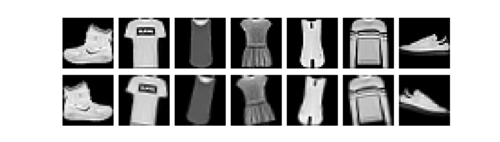
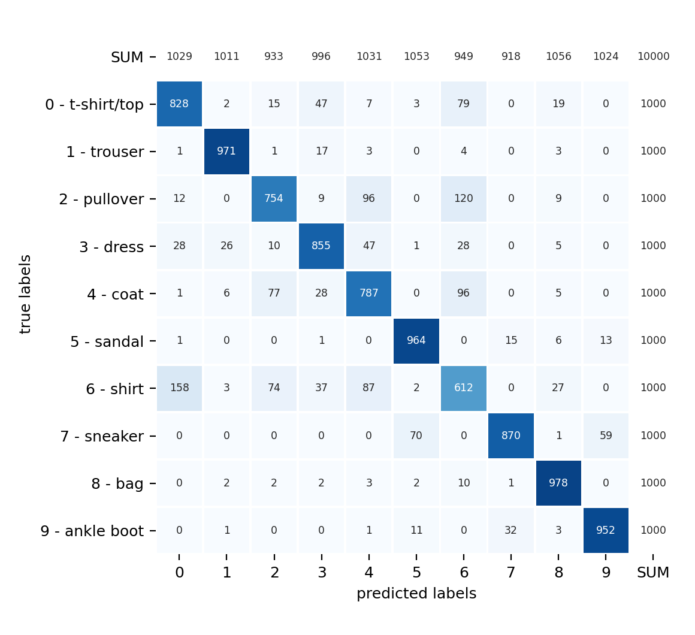
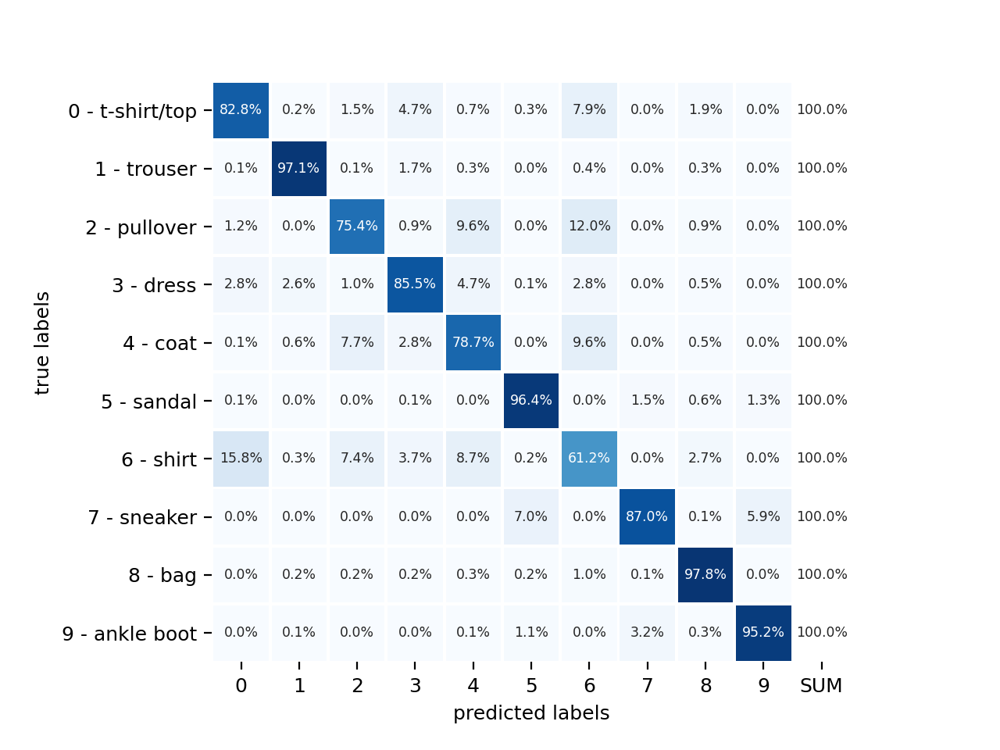

<!DOCTYPE html>

<html>
  <head>
    <meta charset="utf-8" />
    <meta name="viewport" content="width=device-width, initial-scale=1.0" /><meta name="generator" content="Docutils 0.17.1: http://docutils.sourceforge.net/" />

    <title>Serving TensorFlow Models in Docker &#8212; spellbook</title>
    
  <!-- Loaded before other Sphinx assets -->
  <link href="../../_static/styles/theme.css?digest=1999514e3f237ded88cf" rel="stylesheet">
<link href="../../_static/styles/pydata-sphinx-theme.css?digest=1999514e3f237ded88cf" rel="stylesheet">

    
  <link rel="stylesheet"
    href="../../_static/vendor/fontawesome/5.13.0/css/all.min.css">
  <link rel="preload" as="font" type="font/woff2" crossorigin
    href="../../_static/vendor/fontawesome/5.13.0/webfonts/fa-solid-900.woff2">
  <link rel="preload" as="font" type="font/woff2" crossorigin
    href="../../_static/vendor/fontawesome/5.13.0/webfonts/fa-brands-400.woff2">

    <link rel="stylesheet" type="text/css" href="../../_static/pygments.css" />
    <link rel="stylesheet" href="../../_static/styles/sphinx-book-theme.css?digest=5115cc725059bd94278eecd172e13a965bf8f5a9" type="text/css" />
    <link rel="stylesheet" type="text/css" href="../../_static/copybutton.css" />
    <link rel="stylesheet" type="text/css" href="../../_static/tabs.css" />
    <link rel="stylesheet" type="text/css" href="../../_static/custom.css" />
    <link rel="stylesheet" type="text/css" href="../../_static/tooltip.css" />
    <link rel="stylesheet" type="text/css" href="../../_static/sg_gallery.css" />
    <link rel="stylesheet" type="text/css" href="../../_static/sg_gallery-binder.css" />
    <link rel="stylesheet" type="text/css" href="../../_static/sg_gallery-dataframe.css" />
    <link rel="stylesheet" type="text/css" href="../../_static/sg_gallery-rendered-html.css" />
    <link rel="stylesheet" type="text/css" href="../../_static/design-style.b7bb847fb20b106c3d81b95245e65545.min.css" />
    
  <!-- Pre-loaded scripts that we'll load fully later -->
  <link rel="preload" as="script" href="../../_static/scripts/pydata-sphinx-theme.js?digest=1999514e3f237ded88cf">

    <script data-url_root="../../" id="documentation_options" src="../../_static/documentation_options.js"></script>
    <script src="../../_static/jquery.js"></script>
    <script src="../../_static/underscore.js"></script>
    <script src="../../_static/doctools.js"></script>
    <script src="../../_static/clipboard.min.js"></script>
    <script src="../../_static/copybutton.js"></script>
    <script src="../../_static/scripts/sphinx-book-theme.js?digest=9c920249402e914e316237a7dbc6769907cce411"></script>
    <script defer="defer" src="../../_static/tooltip.js"></script>
    <script src="../../_static/glossary.json"></script>
    <script src="../../_static/design-tabs.js"></script>
    <script crossorigin="anonymous" integrity="sha256-Ae2Vz/4ePdIu6ZyI/5ZGsYnb+m0JlOmKPjt6XZ9JJkA=" src="https://cdnjs.cloudflare.com/ajax/libs/require.js/2.3.4/require.min.js"></script>
    <link rel="shortcut icon" href="../../_static/spellbook-icon.ico"/>
    <link rel="index" title="Index" href="../../genindex.html" />
    <link rel="search" title="Search" href="../../search.html" />
    <link rel="next" title="TensorFlow Serving with Docker on AWS" href="../../examples/4-tf-serving-docker-aws/index.html" />
    <link rel="prev" title="Random Forests and Gradient Boosted Trees in TensorFlow" href="../../examples/2-tensorflow-decision-forests/index.html" />
    <script async="async" src="https://cdnjs.cloudflare.com/ajax/libs/mathjax/2.7.7/latest.js?config=TeX-AMS-MML_HTMLorMML"></script>
    <script type="text/x-mathjax-config">MathJax.Hub.Config({"tex2jax": {"inlineMath": [["$", "$"], ["\\(", "\\)"]], "processEscapes": true, "ignoreClass": "document", "processClass": "math|output_area"}})</script>
    
    <meta name="viewport" content="width=device-width, initial-scale=1" />
    <meta name="docsearch:language" content="None">
    

    <!-- Google Analytics -->
    

  </head>
  <body data-spy="scroll" data-target="#bd-toc-nav" data-offset="60">
<!-- Checkboxes to toggle the left sidebar -->
<input type="checkbox" class="sidebar-toggle" name="__navigation" id="__navigation" aria-label="Toggle navigation sidebar">
<label class="overlay overlay-navbar" for="__navigation">
    <div class="visually-hidden">Toggle navigation sidebar</div>
</label>
<!-- Checkboxes to toggle the in-page toc -->
<input type="checkbox" class="sidebar-toggle" name="__page-toc" id="__page-toc" aria-label="Toggle in-page Table of Contents">
<label class="overlay overlay-pagetoc" for="__page-toc">
    <div class="visually-hidden">Toggle in-page Table of Contents</div>
</label>
<!-- Headers at the top -->
<div class="announcement header-item noprint"></div>
<div class="header header-item noprint"></div>

    
    <div class="container-fluid" id="banner"></div>

    

    <div class="container-xl">
      <div class="row">
          
<!-- Sidebar -->
<div class="bd-sidebar noprint" id="site-navigation">
    <div class="bd-sidebar__content">
        <div class="bd-sidebar__top"><div class="navbar-brand-box">
    <a class="navbar-brand text-wrap" href="../../index.html">
      
        <!-- `logo` is deprecated in Sphinx 4.0, so remove this when we stop supporting 3 -->
        
      
      
      
      
      
      <h1 class="site-logo" id="site-title">spellbook</h1>
      
    </a>
</div><form class="bd-search d-flex align-items-center" action="../../search.html" method="get">
  <i class="icon fas fa-search"></i>
  <input type="search" class="form-control" name="q" id="search-input" placeholder="Search" aria-label="Search" autocomplete="off" >
</form><nav class="bd-links" id="bd-docs-nav" aria-label="Main">
    <div class="bd-toc-item active">
        <p aria-level="2" class="caption" role="heading">
 <span class="caption-text">
  The spellbook Library
 </span>
</p>
<ul class="nav bd-sidenav">
 <li class="toctree-l1 has-children">
  <a class="reference internal" href="../../API.html">
   Source Code Reference
  </a>
  <input class="toctree-checkbox" id="toctree-checkbox-1" name="toctree-checkbox-1" type="checkbox"/>
  <label for="toctree-checkbox-1">
   <i class="fas fa-chevron-down">
   </i>
  </label>
  <ul>
   <li class="toctree-l2 has-children">
    <a class="reference internal" href="../../API-python.html">
     Python
    </a>
    <input class="toctree-checkbox" id="toctree-checkbox-2" name="toctree-checkbox-2" type="checkbox"/>
    <label for="toctree-checkbox-2">
     <i class="fas fa-chevron-down">
     </i>
    </label>
    <ul>
     <li class="toctree-l3">
      <a class="reference internal" href="../../_stubs/spellbook.input.html">
       spellbook.input
      </a>
     </li>
     <li class="toctree-l3">
      <a class="reference internal" href="../../_stubs/spellbook.inspect.html">
       spellbook.inspect
      </a>
     </li>
     <li class="toctree-l3">
      <a class="reference internal" href="../../_stubs/spellbook.plot.html">
       spellbook.plot
      </a>
     </li>
     <li class="toctree-l3">
      <a class="reference internal" href="../../_stubs/spellbook.plot1D.html">
       spellbook.plot1D
      </a>
     </li>
     <li class="toctree-l3">
      <a class="reference internal" href="../../_stubs/spellbook.plot2D.html">
       spellbook.plot2D
      </a>
     </li>
     <li class="toctree-l3">
      <a class="reference internal" href="../../_stubs/spellbook.plotutils.html">
       spellbook.plotutils
      </a>
     </li>
     <li class="toctree-l3">
      <a class="reference internal" href="../../_stubs/spellbook.stat.html">
       spellbook.stat
      </a>
     </li>
     <li class="toctree-l3">
      <a class="reference internal" href="../../_stubs/spellbook.train.html">
       spellbook.train
      </a>
     </li>
    </ul>
   </li>
  </ul>
 </li>
 <li class="toctree-l1 has-children">
  <a class="reference internal" href="../../tools.html">
   Tools and Technologies
  </a>
  <input class="toctree-checkbox" id="toctree-checkbox-3" name="toctree-checkbox-3" type="checkbox"/>
  <label for="toctree-checkbox-3">
   <i class="fas fa-chevron-down">
   </i>
  </label>
  <ul>
   <li class="toctree-l2">
    <a class="reference internal" href="../../tools/aws.html">
     AWS
    </a>
   </li>
   <li class="toctree-l2">
    <a class="reference internal" href="../../tools/conda.html">
     Conda, Mamba &amp; Pip
    </a>
   </li>
   <li class="toctree-l2">
    <a class="reference internal" href="../../tools/docker.html">
     Docker
    </a>
   </li>
   <li class="toctree-l2">
    <a class="reference internal" href="../../tools/gcp.html">
     GCP
    </a>
   </li>
   <li class="toctree-l2 has-children">
    <a class="reference internal" href="../../tools/git.html">
     Git
    </a>
    <input class="toctree-checkbox" id="toctree-checkbox-4" name="toctree-checkbox-4" type="checkbox"/>
    <label for="toctree-checkbox-4">
     <i class="fas fa-chevron-down">
     </i>
    </label>
    <ul>
     <li class="toctree-l3">
      <a class="reference internal" href="../../tools/github.html">
       GitHub
      </a>
     </li>
    </ul>
   </li>
   <li class="toctree-l2">
    <a class="reference internal" href="../../tools/jupyter.html">
     Jupyter
    </a>
   </li>
   <li class="toctree-l2">
    <a class="reference internal" href="../../tools/mkdocs.html">
     MkDocs
    </a>
   </li>
   <li class="toctree-l2">
    <a class="reference internal" href="../../tools/pandas.html">
     pandas
    </a>
   </li>
   <li class="toctree-l2 has-children">
    <a class="reference internal" href="../../tools/python.html">
     Python
    </a>
    <input class="toctree-checkbox" id="toctree-checkbox-5" name="toctree-checkbox-5" type="checkbox"/>
    <label for="toctree-checkbox-5">
     <i class="fas fa-chevron-down">
     </i>
    </label>
    <ul>
     <li class="toctree-l3">
      <a class="reference internal" href="../../tools/python-logging.html">
       Logging
      </a>
     </li>
    </ul>
   </li>
   <li class="toctree-l2">
    <a class="reference internal" href="../../tools/rich.html">
     Rich
    </a>
   </li>
   <li class="toctree-l2">
    <a class="reference internal" href="../../tools/sphinx.html">
     Sphinx
    </a>
   </li>
   <li class="toctree-l2 has-children">
    <a class="reference internal" href="../../tools/tf.html">
     TensorFlow
    </a>
    <input class="toctree-checkbox" id="toctree-checkbox-6" name="toctree-checkbox-6" type="checkbox"/>
    <label for="toctree-checkbox-6">
     <i class="fas fa-chevron-down">
     </i>
    </label>
    <ul>
     <li class="toctree-l3">
      <a class="reference internal" href="../../tools/tf-save.html">
       Saving and Loading Models
      </a>
     </li>
    </ul>
   </li>
   <li class="toctree-l2">
    <a class="reference internal" href="../../tools/virtualenv.html">
     virtualenv &amp; venv
    </a>
   </li>
   <li class="toctree-l2">
    <a class="reference internal" href="../../tools/vscode.html">
     Visual Studio Code
    </a>
   </li>
  </ul>
 </li>
</ul>
<p aria-level="2" class="caption" role="heading">
 <span class="caption-text">
  Projects &amp; Tutorials
 </span>
</p>
<ul class="current nav bd-sidenav">
 <li class="toctree-l1">
  <a class="reference internal" href="../../examples/examples.html">
   Table of Contents
  </a>
 </li>
 <li class="toctree-l1 has-children">
  <a class="reference internal" href="../../examples/1-binary-stroke-prediction/index.html">
   Binary Classification: Stroke Prediction
  </a>
  <input class="toctree-checkbox" id="toctree-checkbox-7" name="toctree-checkbox-7" type="checkbox"/>
  <label for="toctree-checkbox-7">
   <i class="fas fa-chevron-down">
   </i>
  </label>
  <ul>
   <li class="toctree-l2">
    <a class="reference internal" href="../../examples/1-binary-stroke-prediction/exploration-cleaning.html">
     Data Exploration and Cleaning
    </a>
   </li>
   <li class="toctree-l2">
    <a class="reference internal" href="../../examples/1-binary-stroke-prediction/input-pipeline.html">
     Data Preparation and Input Pipeline
    </a>
   </li>
   <li class="toctree-l2">
    <a class="reference internal" href="../../examples/1-binary-stroke-prediction/training-validation.html">
     Model Training and Validation
    </a>
   </li>
  </ul>
 </li>
 <li class="toctree-l1">
  <a class="reference internal" href="../../examples/2-tensorflow-decision-forests/index.html">
   Decision Forests in TensorFlow
  </a>
 </li>
 <li class="toctree-l1 current active">
  <a class="current reference internal" href="#">
   Serving
   <em>
    TensorFlow
   </em>
   Models in
   <em>
    Docker
   </em>
  </a>
 </li>
 <li class="toctree-l1">
  <a class="reference internal" href="../../examples/4-tf-serving-docker-aws/index.html">
   <em>
    TensorFlow Serving
   </em>
   with
   <em>
    Docker
   </em>
   on
   <em>
    AWS
   </em>
  </a>
 </li>
</ul>
<p aria-level="2" class="caption" role="heading">
 <span class="caption-text">
  Extras
 </span>
</p>
<ul class="nav bd-sidenav">
 <li class="toctree-l1">
  <a class="reference internal" href="../../literature.html">
   Links &amp; Literature
  </a>
 </li>
 <li class="toctree-l1">
  <a class="reference internal" href="../../glossary.html">
   Glossary
  </a>
 </li>
 <li class="toctree-l1">
  <a class="reference internal" href="../../genindex.html">
   Index
  </a>
 </li>
 <li class="toctree-l1">
  <a class="reference internal" href="../../todo.html">
   ToDo List
  </a>
 </li>
</ul>

    </div>
</nav><div class="navbar_extra_footer">
    <table style="margin-top:2.0rem;">
        <tr>
            <td style="text-align: left;">
                <a href="https://github.com/dmrauch">
                    
                </a>
            </td>
            <td style="padding-left: 0.5rem; text-align: left; font-style:italic; font-weight: bold;">
                Contact me on <a href="https://github.com/dmrauch">GitHub</a>
            </td>
        </tr>
        <tr>
            <td style="text-align: left;">
                <a href="https://www.linkedin.com/in/dmrauch/">
                    </td>
                </a>
            <td style="padding-left: 0.5rem; text-align: left; font-style:italic; font-weight: bold;">
                Contact me on <a href="https://www.linkedin.com/in/dmrauch/">LinkedIn</a>
            </td>
        </tr>
    </table>
</div></div>
        <div class="bd-sidebar__bottom">
             <!-- To handle the deprecated key -->
            
        </div>
    </div>
    <div id="rtd-footer-container"></div>
</div>


          


          
<!-- A tiny helper pixel to detect if we've scrolled -->
<div class="sbt-scroll-pixel-helper"></div>
<!-- Main content -->
<div class="col py-0 content-container">
    
    <div class="header-article row sticky-top noprint">
        


<div class="col py-1 d-flex header-article-main">
    <div class="header-article__left">
        
        <label for="__navigation"
  class="headerbtn"
  data-toggle="tooltip"
data-placement="right"
title="Toggle navigation"
>
  

<span class="headerbtn__icon-container">
  <i class="fas fa-bars"></i>
  </span>

</label>

        
    </div>
    <div class="header-article__right">
<button onclick="toggleFullScreen()"
  class="headerbtn"
  data-toggle="tooltip"
data-placement="bottom"
title="Fullscreen mode"
>
  

<span class="headerbtn__icon-container">
  <i class="fas fa-expand"></i>
  </span>

</button>

<div class="menu-dropdown menu-dropdown-repository-buttons">
  <button class="headerbtn menu-dropdown__trigger"
      aria-label="Source repositories">
      <i class="fab fa-github"></i>
  </button>
  <div class="menu-dropdown__content">
    <ul>
      <li>
        <a href="https://github.com/dmrauch/spellbook"
   class="headerbtn"
   data-toggle="tooltip"
data-placement="left"
title="Source repository"
>
  

<span class="headerbtn__icon-container">
  <i class="fab fa-github"></i>
  </span>
<span class="headerbtn__text-container">repository</span>
</a>

      </li>
      
      <li>
        <a href="https://github.com/dmrauch/spellbook/issues/new?title=Issue%20on%20page%20%2F_examples/3-tensorflow-serving-docker/code.html&body=Your%20issue%20content%20here."
   class="headerbtn"
   data-toggle="tooltip"
data-placement="left"
title="Open an issue"
>
  

<span class="headerbtn__icon-container">
  <i class="fas fa-lightbulb"></i>
  </span>
<span class="headerbtn__text-container">open issue</span>
</a>

      </li>
      
      <li>
        <a href="https://github.com/dmrauch/spellbook/edit/master/doc/source/_examples/3-tensorflow-serving-docker/code.rst"
   class="headerbtn"
   data-toggle="tooltip"
data-placement="left"
title="Edit this page"
>
  

<span class="headerbtn__icon-container">
  <i class="fas fa-pencil-alt"></i>
  </span>
<span class="headerbtn__text-container">suggest edit</span>
</a>

      </li>
      
    </ul>
  </div>
</div>

<div class="menu-dropdown menu-dropdown-download-buttons">
  <button class="headerbtn menu-dropdown__trigger"
      aria-label="Download this page">
      <i class="fas fa-download"></i>
  </button>
  <div class="menu-dropdown__content">
    <ul>
      <li>
        <a href="../../_sources/_examples/3-tensorflow-serving-docker/code.rst.txt"
   class="headerbtn"
   data-toggle="tooltip"
data-placement="left"
title="Download source file"
>
  

<span class="headerbtn__icon-container">
  <i class="fas fa-file"></i>
  </span>
<span class="headerbtn__text-container">.rst</span>
</a>

      </li>
      
      <li>
        
<button onclick="printPdf(this)"
  class="headerbtn"
  data-toggle="tooltip"
data-placement="left"
title="Print to PDF"
>
  

<span class="headerbtn__icon-container">
  <i class="fas fa-file-pdf"></i>
  </span>
<span class="headerbtn__text-container">.pdf</span>
</button>

      </li>
      
    </ul>
  </div>
</div>
<label for="__page-toc"
  class="headerbtn headerbtn-page-toc"
  
>
  

<span class="headerbtn__icon-container">
  <i class="fas fa-list"></i>
  </span>

</label>

    </div>
</div>

<!-- Table of contents -->
<div class="col-md-3 bd-toc show noprint">
    <div class="tocsection onthispage pt-5 pb-3">
        <i class="fas fa-list"></i> Contents
    </div>
    <nav id="bd-toc-nav" aria-label="Page">
        <ul class="visible nav section-nav flex-column">
 <li class="toc-h2 nav-item toc-entry">
  <a class="reference internal nav-link" href="#the-fashion-mnist-dataset">
   The
   <em>
    Fashion-MNIST
   </em>
   Dataset
  </a>
 </li>
 <li class="toc-h2 nav-item toc-entry">
  <a class="reference internal nav-link" href="#training-a-neural-network-classifier">
   Training a Neural Network Classifier
  </a>
 </li>
 <li class="toc-h2 nav-item toc-entry">
  <a class="reference internal nav-link" href="#evaluating-the-model">
   Evaluating the Model
  </a>
 </li>
 <li class="toc-h2 nav-item toc-entry">
  <a class="reference internal nav-link" href="#making-predictions-about-other-pictures">
   Making Predictions About Other Pictures
  </a>
 </li>
 <li class="toc-h2 nav-item toc-entry">
  <a class="reference internal nav-link" href="#serving-the-model-in-docker">
   Serving the Model in
   <em>
    Docker
   </em>
  </a>
  <ul class="nav section-nav flex-column">
   <li class="toc-h3 nav-item toc-entry">
    <a class="reference internal nav-link" href="#creating-a-custom-image-for-the-model">
     Creating a Custom Image for the Model
    </a>
   </li>
   <li class="toc-h3 nav-item toc-entry">
    <a class="reference internal nav-link" href="#serving-and-querying-our-own-model">
     Serving and Querying Our Own Model
    </a>
   </li>
  </ul>
 </li>
</ul>

    </nav>
</div>
    </div>
    <div class="article row">
        <div class="col pl-md-3 pl-lg-5 content-container">
            <!-- Table of contents that is only displayed when printing the page -->
            <div id="jb-print-docs-body" class="onlyprint">
                <h1>Serving TensorFlow Models in Docker</h1>
                <!-- Table of contents -->
                <div id="print-main-content">
                    <div id="jb-print-toc">
                        
                        <div>
                            <h2> Contents </h2>
                        </div>
                        <nav aria-label="Page">
                            <ul class="visible nav section-nav flex-column">
 <li class="toc-h2 nav-item toc-entry">
  <a class="reference internal nav-link" href="#the-fashion-mnist-dataset">
   The
   <em>
    Fashion-MNIST
   </em>
   Dataset
  </a>
 </li>
 <li class="toc-h2 nav-item toc-entry">
  <a class="reference internal nav-link" href="#training-a-neural-network-classifier">
   Training a Neural Network Classifier
  </a>
 </li>
 <li class="toc-h2 nav-item toc-entry">
  <a class="reference internal nav-link" href="#evaluating-the-model">
   Evaluating the Model
  </a>
 </li>
 <li class="toc-h2 nav-item toc-entry">
  <a class="reference internal nav-link" href="#making-predictions-about-other-pictures">
   Making Predictions About Other Pictures
  </a>
 </li>
 <li class="toc-h2 nav-item toc-entry">
  <a class="reference internal nav-link" href="#serving-the-model-in-docker">
   Serving the Model in
   <em>
    Docker
   </em>
  </a>
  <ul class="nav section-nav flex-column">
   <li class="toc-h3 nav-item toc-entry">
    <a class="reference internal nav-link" href="#creating-a-custom-image-for-the-model">
     Creating a Custom Image for the Model
    </a>
   </li>
   <li class="toc-h3 nav-item toc-entry">
    <a class="reference internal nav-link" href="#serving-and-querying-our-own-model">
     Serving and Querying Our Own Model
    </a>
   </li>
  </ul>
 </li>
</ul>

                        </nav>
                    </div>
                </div>
            </div>
            <main id="main-content" role="main">
                
              <div>
                
  <div class="sphx-glr-download-link-note admonition note">
<p class="admonition-title">Note</p>
<p>Click <a class="reference internal" href="#sphx-glr-download-examples-3-tensorflow-serving-docker-code-py"><span class="std std-ref">here</span></a>
to download the full example code</p>
</div>
<section class="sphx-glr-example-title" id="serving-tensorflow-models-in-docker">
<span id="sphx-glr-examples-3-tensorflow-serving-docker-code-py"></span><h1>Serving <em>TensorFlow</em> Models in <em>Docker</em><a class="headerlink" href="#serving-tensorflow-models-in-docker" title="Permalink to this headline">#</a></h1>
<div class="tag-list">
   <div class="tag-cell tag-date">June 21, 2021</div>
   <div class="tag-cell tag-center"></div>
   <div class="tag-cell tag-right">
      <span class="tag-text">tags:</span>
      <a class="tag right" href="../../search.html?q=tags+CNN">
         CNN</a>
      <a class="tag right" href="../../search.html?q=tags+Docker">
         Docker</a>
      <a class="tag right" href="../../search.html?q=tags+image+augmentation">
         image augmentation</a>
      <a class="tag right" href="../../search.html?q=tags+image+classification">
         image classification</a>
      <a class="tag right" href="../../search.html?q=tags+multi+class+classification">
         multi-class classification</a>
    </div>
</div><div class="spellbook-admonition-orange admonition">
<p class="admonition-title">In this project/tutorial, we will</p>
<ul class="simple">
<li><p>Train a <strong>convolutional neural network</strong> (<strong>CNN</strong>) to do
<strong>multi-class classification</strong> on Zalando’s <strong>Fashion-MNIST</strong> dataset</p></li>
<li><p>Use <strong>image augmentation</strong> to make the model more general</p></li>
<li><p>Serve the model with <em>TensorFlow Serving</em> in a <strong>Docker container</strong></p></li>
</ul>
</div>
<p>The source code files for this tutorial are located in
<code class="docutils literal notranslate"><span class="pre">examples/3-tensorflow-serving-docker/</span></code>.</p>
<p>In the first sections, we will have a look at the <em>Fashion-MNIST</em> dataset and
set up and train a convolutional neural network. If you are just interested
in the part about serving a model in <em>Docker</em>, please skip ahead to the
final section <a class="reference internal" href="#ex3-serving-docker"><span class="std std-ref">Serving the Model in Docker</span></a>.</p>
<section id="the-fashion-mnist-dataset">
<h2>The <em>Fashion-MNIST</em> Dataset<a class="headerlink" href="#the-fashion-mnist-dataset" title="Permalink to this headline">#</a></h2>
<p>Zalando’s <a class="reference external" href="https://www.kaggle.com/zalando-research/fashionmnist">Fashion-MNIST</a> dataset is one of
the standard benchmarking datasets in computer vision, designed to be a
drop-in replacement for the original <em>MNIST</em> dataset of handwritten digits.
<em>Fashion-MNIST</em> consists of greyscale images of different items of clothing.
It includes 60 000 images for training and 10 000 for validation and testing,
28 pixels in height and 28 pixels in width, divided into 10 classes
indicating the type of clothing:</p>
<ul class="simple">
<li><p><strong>0</strong>: t-shirt, top</p></li>
<li><p><strong>1</strong>: trouser</p></li>
<li><p><strong>2</strong>: pullover</p></li>
<li><p><strong>3</strong>: dress</p></li>
<li><p><strong>4</strong>: coat</p></li>
<li><p><strong>5</strong>: sandal</p></li>
<li><p><strong>6</strong>: shirt</p></li>
<li><p><strong>7</strong>: sneaker</p></li>
<li><p><strong>8</strong>: bag</p></li>
<li><p><strong>9</strong>: ankle boot</p></li>
</ul>
<p><em>TensorFlow</em> and <em>Keras</em> provide the <em>Fashion-MNIST</em> dataset as
<a class="reference external" href="https://numpy.org/doc/stable/reference/generated/numpy.ndarray.html#numpy.ndarray" title="(in NumPy v1.23)"><code class="xref py py-class docutils literal notranslate"><span class="pre">numpy.ndarray</span></code></a>s containing the 28x28 pixel values and the labels.
They can be loaded with</p>
<aside class="margin sidebar">
<p class="sidebar-title">from <strong>1-plot.py</strong></p>
<p>in <code class="docutils literal notranslate"><span class="pre">examples/3-tensorflow-serving-docker/</span></code></p>
</aside>
<div class="highlight-default notranslate"><div class="highlight"><pre><span></span><span class="kn">import</span> <span class="nn">tensorflow</span> <span class="k">as</span> <span class="nn">tf</span>

<span class="n">fashion_mnist</span> <span class="o">=</span> <a href="https://www.tensorflow.org/api_docs/python/tf/keras/datasets/fashion_mnist" title="tensorflow.keras.datasets.fashion_mnist" class="sphx-glr-backref-module-tensorflow-keras-datasets sphx-glr-backref-type-py-module"><span class="n">tf</span><span class="o">.</span><span class="n">keras</span><span class="o">.</span><span class="n">datasets</span><span class="o">.</span><span class="n">fashion_mnist</span></a>
<span class="p">(</span><a href="https://numpy.org/doc/stable/reference/generated/numpy.ndarray.html#numpy.ndarray" title="numpy.ndarray" class="sphx-glr-backref-module-numpy sphx-glr-backref-type-py-class sphx-glr-backref-instance"><span class="n">train_images</span></a><span class="p">,</span> <a href="https://numpy.org/doc/stable/reference/generated/numpy.ndarray.html#numpy.ndarray" title="numpy.ndarray" class="sphx-glr-backref-module-numpy sphx-glr-backref-type-py-class sphx-glr-backref-instance"><span class="n">train_labels</span></a><span class="p">),</span> <span class="p">(</span><a href="https://numpy.org/doc/stable/reference/generated/numpy.ndarray.html#numpy.ndarray" title="numpy.ndarray" class="sphx-glr-backref-module-numpy sphx-glr-backref-type-py-class sphx-glr-backref-instance"><span class="n">val_images</span></a><span class="p">,</span> <a href="https://numpy.org/doc/stable/reference/generated/numpy.ndarray.html#numpy.ndarray" title="numpy.ndarray" class="sphx-glr-backref-module-numpy sphx-glr-backref-type-py-class sphx-glr-backref-instance"><span class="n">val_labels</span></a><span class="p">)</span> \
    <span class="o">=</span> <span class="n">fashion_mnist</span><span class="o">.</span><span class="n">load_data</span><span class="p">()</span>

<span class="nb">print</span><span class="p">(</span><span class="nb">type</span><span class="p">(</span><a href="https://numpy.org/doc/stable/reference/generated/numpy.ndarray.html#numpy.ndarray" title="numpy.ndarray" class="sphx-glr-backref-module-numpy sphx-glr-backref-type-py-class sphx-glr-backref-instance"><span class="n">train_images</span></a><span class="p">),</span> <span class="nb">type</span><span class="p">(</span><a href="https://numpy.org/doc/stable/reference/generated/numpy.ndarray.html#numpy.ndarray" title="numpy.ndarray" class="sphx-glr-backref-module-numpy sphx-glr-backref-type-py-class sphx-glr-backref-instance"><span class="n">train_labels</span></a><span class="p">))</span>
<span class="nb">print</span><span class="p">(</span><a href="https://docs.python.org/3/library/stdtypes.html#tuple" title="builtins.tuple" class="sphx-glr-backref-module-builtins sphx-glr-backref-type-py-class sphx-glr-backref-instance"><span class="n">train_images</span><span class="o">.</span><span class="n">shape</span></a><span class="p">,</span> <a href="https://docs.python.org/3/library/stdtypes.html#tuple" title="builtins.tuple" class="sphx-glr-backref-module-builtins sphx-glr-backref-type-py-class sphx-glr-backref-instance"><span class="n">train_labels</span><span class="o">.</span><span class="n">shape</span></a><span class="p">)</span>
</pre></div>
</div>
<div class="sphx-glr-script-out highlight-none notranslate"><div class="highlight"><pre><span></span>Downloading data from https://storage.googleapis.com/tensorflow/tf-keras-datasets/train-labels-idx1-ubyte.gz

16384/29515 [===============&gt;..............] - ETA: 0s
32768/29515 [=================================] - 0s 0us/step

40960/29515 [=========================================] - 0s 0us/step
Downloading data from https://storage.googleapis.com/tensorflow/tf-keras-datasets/train-images-idx3-ubyte.gz

   16384/26421880 [..............................] - ETA: 1s
 7086080/26421880 [=======&gt;......................] - ETA: 0s
19644416/26421880 [=====================&gt;........] - ETA: 0s
26427392/26421880 [==============================] - 0s 0us/step

26435584/26421880 [==============================] - 0s 0us/step
Downloading data from https://storage.googleapis.com/tensorflow/tf-keras-datasets/t10k-labels-idx1-ubyte.gz

16384/5148 [===============================================================================================] - 0s 0us/step
Downloading data from https://storage.googleapis.com/tensorflow/tf-keras-datasets/t10k-images-idx3-ubyte.gz

  16384/4422102 [..............................] - ETA: 0s
3653632/4422102 [=======================&gt;......] - ETA: 0s
4423680/4422102 [==============================] - 0s 0us/step

4431872/4422102 [==============================] - 0s 0us/step
&lt;class &#39;numpy.ndarray&#39;&gt; &lt;class &#39;numpy.ndarray&#39;&gt;
(60000, 28, 28) (60000,)
</pre></div>
</div>
<p>Each image is a 28x28 array of values between 0 and 255, with the background
filled with zeros and the object itself given with values larger than 0:</p>
<aside class="margin sidebar">
<p class="sidebar-title">from <strong>1-plot.py</strong></p>
<p>in <code class="docutils literal notranslate"><span class="pre">examples/3-tensorflow-serving-docker/</span></code></p>
</aside>
<div class="highlight-default notranslate"><div class="highlight"><pre><span></span><span class="kn">import</span> <span class="nn">numpy</span> <span class="k">as</span> <span class="nn">np</span>
<span class="nb">print</span><span class="p">(</span><a href="https://numpy.org/doc/stable/reference/generated/numpy.array2string.html#numpy.array2string" title="numpy.array2string" class="sphx-glr-backref-module-numpy sphx-glr-backref-type-py-function"><span class="n">np</span><span class="o">.</span><span class="n">array2string</span></a><span class="p">(</span><a href="https://numpy.org/doc/stable/reference/generated/numpy.ndarray.html#numpy.ndarray" title="numpy.ndarray" class="sphx-glr-backref-module-numpy sphx-glr-backref-type-py-class sphx-glr-backref-instance"><span class="n">train_images</span></a><span class="p">[</span><span class="mi">0</span><span class="p">],</span> <span class="n">max_line_width</span><span class="o">=</span><span class="mi">150</span><span class="p">))</span>
</pre></div>
</div>
<div class="sphx-glr-script-out highlight-none notranslate"><div class="highlight"><pre><span></span>[[  0   0   0   0   0   0   0   0   0   0   0   0   0   0   0   0   0   0   0   0   0   0   0   0   0   0   0   0]
 [  0   0   0   0   0   0   0   0   0   0   0   0   0   0   0   0   0   0   0   0   0   0   0   0   0   0   0   0]
 [  0   0   0   0   0   0   0   0   0   0   0   0   0   0   0   0   0   0   0   0   0   0   0   0   0   0   0   0]
 [  0   0   0   0   0   0   0   0   0   0   0   0   1   0   0  13  73   0   0   1   4   0   0   0   0   1   1   0]
 [  0   0   0   0   0   0   0   0   0   0   0   0   3   0  36 136 127  62  54   0   0   0   1   3   4   0   0   3]
 [  0   0   0   0   0   0   0   0   0   0   0   0   6   0 102 204 176 134 144 123  23   0   0   0   0  12  10   0]
 [  0   0   0   0   0   0   0   0   0   0   0   0   0   0 155 236 207 178 107 156 161 109  64  23  77 130  72  15]
 [  0   0   0   0   0   0   0   0   0   0   0   1   0  69 207 223 218 216 216 163 127 121 122 146 141  88 172  66]
 [  0   0   0   0   0   0   0   0   0   1   1   1   0 200 232 232 233 229 223 223 215 213 164 127 123 196 229   0]
 [  0   0   0   0   0   0   0   0   0   0   0   0   0 183 225 216 223 228 235 227 224 222 224 221 223 245 173   0]
 [  0   0   0   0   0   0   0   0   0   0   0   0   0 193 228 218 213 198 180 212 210 211 213 223 220 243 202   0]
 [  0   0   0   0   0   0   0   0   0   1   3   0  12 219 220 212 218 192 169 227 208 218 224 212 226 197 209  52]
 [  0   0   0   0   0   0   0   0   0   0   6   0  99 244 222 220 218 203 198 221 215 213 222 220 245 119 167  56]
 [  0   0   0   0   0   0   0   0   0   4   0   0  55 236 228 230 228 240 232 213 218 223 234 217 217 209  92   0]
 [  0   0   1   4   6   7   2   0   0   0   0   0 237 226 217 223 222 219 222 221 216 223 229 215 218 255  77   0]
 [  0   3   0   0   0   0   0   0   0  62 145 204 228 207 213 221 218 208 211 218 224 223 219 215 224 244 159   0]
 [  0   0   0   0  18  44  82 107 189 228 220 222 217 226 200 205 211 230 224 234 176 188 250 248 233 238 215   0]
 [  0  57 187 208 224 221 224 208 204 214 208 209 200 159 245 193 206 223 255 255 221 234 221 211 220 232 246   0]
 [  3 202 228 224 221 211 211 214 205 205 205 220 240  80 150 255 229 221 188 154 191 210 204 209 222 228 225   0]
 [ 98 233 198 210 222 229 229 234 249 220 194 215 217 241  65  73 106 117 168 219 221 215 217 223 223 224 229  29]
 [ 75 204 212 204 193 205 211 225 216 185 197 206 198 213 240 195 227 245 239 223 218 212 209 222 220 221 230  67]
 [ 48 203 183 194 213 197 185 190 194 192 202 214 219 221 220 236 225 216 199 206 186 181 177 172 181 205 206 115]
 [  0 122 219 193 179 171 183 196 204 210 213 207 211 210 200 196 194 191 195 191 198 192 176 156 167 177 210  92]
 [  0   0  74 189 212 191 175 172 175 181 185 188 189 188 193 198 204 209 210 210 211 188 188 194 192 216 170   0]
 [  2   0   0   0  66 200 222 237 239 242 246 243 244 221 220 193 191 179 182 182 181 176 166 168  99  58   0   0]
 [  0   0   0   0   0   0   0  40  61  44  72  41  35   0   0   0   0   0   0   0   0   0   0   0   0   0   0   0]
 [  0   0   0   0   0   0   0   0   0   0   0   0   0   0   0   0   0   0   0   0   0   0   0   0   0   0   0   0]
 [  0   0   0   0   0   0   0   0   0   0   0   0   0   0   0   0   0   0   0   0   0   0   0   0   0   0   0   0]]
</pre></div>
</div>
<p>While it is possible to use just these arrays to train a neural network
classifier, let’s go a step further and use
<a class="reference external" href="https://www.tensorflow.org/api_docs/python/tf/keras/preprocessing/image/ImageDataGenerator" title="(in TensorFlow v2.4)"><code class="xref py py-class docutils literal notranslate"><span class="pre">tf.keras.preprocessing.image.ImageDataGenerator</span></code></a> for creating
a flow of images for training and validation.
With <a class="reference external" href="https://www.tensorflow.org/api_docs/python/tf/keras/preprocessing/image/ImageDataGenerator" title="(in TensorFlow v2.4)"><code class="xref py py-class docutils literal notranslate"><span class="pre">tf.keras.preprocessing.image.ImageDataGenerator</span></code></a> it is
possible to flow images from <a class="reference external" href="https://numpy.org/doc/stable/reference/generated/numpy.ndarray.html#numpy.ndarray" title="(in NumPy v1.23)"><code class="xref py py-class docutils literal notranslate"><span class="pre">numpy.ndarray</span></code></a>s, but also to load
and flow them from directories or <a class="reference external" href="https://pandas.pydata.org/docs/reference/api/pandas.DataFrame.html#pandas.DataFrame" title="(in pandas v1.4.3)"><code class="xref py py-class docutils literal notranslate"><span class="pre">pandas.DataFrame</span></code></a>s containing
the image filepaths. At the same time,
<a class="reference external" href="https://www.tensorflow.org/api_docs/python/tf/keras/preprocessing/image/ImageDataGenerator" title="(in TensorFlow v2.4)"><code class="xref py py-class docutils literal notranslate"><span class="pre">tf.keras.preprocessing.image.ImageDataGenerator</span></code></a> is able to
prepare the labels, batch the images and the labels as well as apply
<a class="reference internal" href="../../glossary.html#term-image-augmentation"><span class="xref std std-term">image augmentation</span></a>. In image augmentation, transformations are
applied to the images, including, but not limited to</p>
<ul class="simple">
<li><p>horizontally or vertically flipping</p></li>
<li><p>rotating</p></li>
<li><p>zooming</p></li>
<li><p>shearing</p></li>
</ul>
<p>them randomly within configurable ranges where applicable.
The randomness and the effective increase in the number of training
images reduce the likelihood of overtraining and the widened range of
positions, orientations and appearances of the objects in the images
can help make the model more applicable to a larger number of images
in inference.
We can set up the generator and obtain the flow iterator with</p>
<aside class="margin sidebar">
<p class="sidebar-title">from <strong>helpers.py</strong></p>
<p>in <code class="docutils literal notranslate"><span class="pre">examples/3-tensorflow-serving-docker/</span></code></p>
</aside>
<div class="highlight-default notranslate"><div class="highlight"><pre><span></span><span class="kn">import</span> <span class="nn">numpy</span> <span class="k">as</span> <span class="nn">np</span>

<span class="k">def</span> <span class="nf">get_generator</span><span class="p">(</span><span class="n">images</span><span class="p">,</span> <span class="n">labels</span><span class="p">,</span> <span class="n">batch_size</span><span class="o">=</span><span class="mi">32</span><span class="p">,</span> <span class="o">**</span><span class="n">kwargs</span><span class="p">):</span>

    <span class="n">datagen</span> <span class="o">=</span> <a href="https://www.tensorflow.org/api_docs/python/tf/keras/preprocessing/image/ImageDataGenerator" title="tensorflow.keras.preprocessing.image.ImageDataGenerator" class="sphx-glr-backref-module-tensorflow-keras-preprocessing-image sphx-glr-backref-type-py-class sphx-glr-backref-instance"><span class="n">tf</span><span class="o">.</span><span class="n">keras</span><span class="o">.</span><span class="n">preprocessing</span><span class="o">.</span><span class="n">image</span><span class="o">.</span><span class="n">ImageDataGenerator</span></a><span class="p">(</span>
        <span class="n">horizontal_flip</span><span class="o">=</span><span class="kc">True</span><span class="p">,</span>
        <span class="n">rotation_range</span><span class="o">=</span><span class="mi">20</span><span class="p">,</span>
        <span class="n">rescale</span><span class="o">=</span><span class="mi">1</span><span class="o">/</span><span class="mi">255</span><span class="p">)</span>

    <span class="n">gen</span> <span class="o">=</span> <span class="n">datagen</span><span class="o">.</span><span class="n">flow</span><span class="p">(</span>
        <span class="n">x</span> <span class="o">=</span> <a href="https://numpy.org/doc/stable/reference/generated/numpy.expand_dims.html#numpy.expand_dims" title="numpy.expand_dims" class="sphx-glr-backref-module-numpy sphx-glr-backref-type-py-function"><span class="n">np</span><span class="o">.</span><span class="n">expand_dims</span></a><span class="p">(</span><span class="n">images</span><span class="p">,</span> <span class="n">axis</span><span class="o">=</span><span class="mi">3</span><span class="p">),</span>
        <span class="n">y</span> <span class="o">=</span> <a href="https://www.tensorflow.org/api_docs/python/tf/keras/utils/to_categorical" title="tensorflow.keras.utils.to_categorical" class="sphx-glr-backref-module-tensorflow-keras-utils sphx-glr-backref-type-py-function"><span class="n">tf</span><span class="o">.</span><span class="n">keras</span><span class="o">.</span><span class="n">utils</span><span class="o">.</span><span class="n">to_categorical</span></a><span class="p">(</span><span class="n">labels</span><span class="p">,</span> <span class="n">num_classes</span><span class="o">=</span><span class="mi">10</span><span class="p">),</span>
        <span class="n">batch_size</span> <span class="o">=</span> <span class="n">batch_size</span><span class="p">,</span>
        <span class="o">**</span><span class="n">kwargs</span>
    <span class="p">)</span>

    <span class="k">return</span> <span class="n">gen</span>
</pre></div>
</div>
<p>Note that we also rescaled the images with a factor of 1/255 to restrict
the values to the range between 0 and 1. This is a customary input
normalisation since neural networks generally perform better with data
of the order of one.
We also turned the simple integer class labels into one-hot encoded
label vectors using <a class="reference external" href="https://www.tensorflow.org/api_docs/python/tf/keras/utils/to_categorical" title="(in TensorFlow v2.4)"><code class="xref py py-func docutils literal notranslate"><span class="pre">tf.keras.utils.to_categorical()</span></code></a>.</p>
<p>We can then instantiate a generator, e.g. for the training set, and
retrieve the first batch of augmented images</p>
<aside class="margin sidebar">
<p class="sidebar-title">from <strong>1-plot.py</strong></p>
<p>in <code class="docutils literal notranslate"><span class="pre">examples/3-tensorflow-serving-docker/</span></code></p>
</aside>
<div class="highlight-default notranslate"><div class="highlight"><pre><span></span><span class="kn">import</span> <span class="nn">helpers</span>

<a href="https://docs.python.org/3/library/functions.html#int" title="builtins.int" class="sphx-glr-backref-module-builtins sphx-glr-backref-type-py-class sphx-glr-backref-instance"><span class="n">n</span></a> <span class="o">=</span> <span class="mi">7</span>

<span class="n">train_gen</span> <span class="o">=</span> <span class="n">helpers</span><span class="o">.</span><span class="n">get_generator</span><span class="p">(</span><a href="https://numpy.org/doc/stable/reference/generated/numpy.ndarray.html#numpy.ndarray" title="numpy.ndarray" class="sphx-glr-backref-module-numpy sphx-glr-backref-type-py-class sphx-glr-backref-instance"><span class="n">train_images</span></a><span class="p">,</span> <a href="https://numpy.org/doc/stable/reference/generated/numpy.ndarray.html#numpy.ndarray" title="numpy.ndarray" class="sphx-glr-backref-module-numpy sphx-glr-backref-type-py-class sphx-glr-backref-instance"><span class="n">train_labels</span></a><span class="p">,</span> <span class="n">batch_size</span><span class="o">=</span><a href="https://docs.python.org/3/library/functions.html#int" title="builtins.int" class="sphx-glr-backref-module-builtins sphx-glr-backref-type-py-class sphx-glr-backref-instance"><span class="n">n</span></a><span class="p">,</span>
    <span class="n">shuffle</span><span class="o">=</span><span class="kc">False</span><span class="p">)</span>

<a href="https://docs.python.org/3/library/stdtypes.html#tuple" title="builtins.tuple" class="sphx-glr-backref-module-builtins sphx-glr-backref-type-py-class sphx-glr-backref-instance"><span class="n">train_images_augmented</span></a> <span class="o">=</span> <span class="nb">next</span><span class="p">(</span><span class="n">train_gen</span><span class="p">)</span>
</pre></div>
</div>
<p>Here, we set <code class="docutils literal notranslate"><span class="pre">shuffle=False</span></code> because we want to preserve the order of
the images for comparing the augmented to the original images.
So let’s proceed to plot a few images in two rows - the original images
in the upper row and the corresponding augmented images in the lower
row. The result is shown in Figure 1.</p>
<aside class="margin sidebar">
<p class="sidebar-title">from <strong>1-plot.py</strong></p>
<p>in <code class="docutils literal notranslate"><span class="pre">examples/3-tensorflow-serving-docker/</span></code></p>
</aside>
<div class="highlight-python notranslate"><div class="highlight"><pre><span></span><span class="kn">import</span> <span class="nn">matplotlib</span> <span class="k">as</span> <span class="nn">mpl</span>
<span class="kn">import</span> <span class="nn">matplotlib.pyplot</span> <span class="k">as</span> <span class="nn">plt</span>
<span class="kn">import</span> <span class="nn">spellbook</span> <span class="k">as</span> <span class="nn">sb</span>

<span class="n">fig</span> <span class="o">=</span> <span class="n">plt</span><span class="o">.</span><span class="n">figure</span><span class="p">(</span><span class="n">figsize</span><span class="o">=</span><span class="p">(</span><span class="mi">7</span><span class="p">,</span><span class="mi">2</span><span class="p">))</span>
<span class="n">grid</span> <span class="o">=</span> <span class="n">mpl</span><span class="o">.</span><span class="n">gridspec</span><span class="o">.</span><span class="n">GridSpec</span><span class="p">(</span><span class="n">nrows</span><span class="o">=</span><span class="mi">2</span><span class="p">,</span> <span class="n">ncols</span><span class="o">=</span><a href="https://docs.python.org/3/library/functions.html#int" title="builtins.int" class="sphx-glr-backref-module-builtins sphx-glr-backref-type-py-class sphx-glr-backref-instance"><span class="n">n</span></a><span class="p">,</span> <span class="n">wspace</span><span class="o">=</span><span class="mf">0.1</span><span class="p">,</span> <span class="n">hspace</span><span class="o">=</span><span class="mf">0.1</span><span class="p">)</span>

<span class="k">for</span> <span class="n">i</span> <span class="ow">in</span> <span class="nb">range</span><span class="p">(</span><a href="https://docs.python.org/3/library/functions.html#int" title="builtins.int" class="sphx-glr-backref-module-builtins sphx-glr-backref-type-py-class sphx-glr-backref-instance"><span class="n">n</span></a><span class="p">):</span>
    <span class="n">ax</span> <span class="o">=</span> <span class="n">plt</span><span class="o">.</span><span class="n">Subplot</span><span class="p">(</span><span class="n">fig</span><span class="p">,</span> <span class="n">grid</span><span class="p">[</span><span class="mi">0</span><span class="p">,</span><span class="n">i</span><span class="p">])</span>
    <span class="n">fig</span><span class="o">.</span><span class="n">add_subplot</span><span class="p">(</span><span class="n">ax</span><span class="p">)</span>
    <span class="n">ax</span><span class="o">.</span><span class="n">set_axis_off</span><span class="p">()</span>
    <span class="n">ax</span> <span class="o">=</span> <span class="n">plt</span><span class="o">.</span><span class="n">imshow</span><span class="p">(</span><a href="https://numpy.org/doc/stable/reference/generated/numpy.ndarray.html#numpy.ndarray" title="numpy.ndarray" class="sphx-glr-backref-module-numpy sphx-glr-backref-type-py-class sphx-glr-backref-instance"><span class="n">train_images</span></a><span class="p">[</span><span class="n">i</span><span class="p">],</span> <span class="n">cmap</span><span class="o">=</span><span class="s1">&#39;gray&#39;</span><span class="p">)</span>

    <span class="n">ax</span> <span class="o">=</span> <span class="n">plt</span><span class="o">.</span><span class="n">Subplot</span><span class="p">(</span><span class="n">fig</span><span class="p">,</span> <span class="n">grid</span><span class="p">[</span><span class="mi">1</span><span class="p">,</span><span class="n">i</span><span class="p">])</span>
    <span class="n">fig</span><span class="o">.</span><span class="n">add_subplot</span><span class="p">(</span><span class="n">ax</span><span class="p">)</span>
    <span class="n">ax</span><span class="o">.</span><span class="n">set_axis_off</span><span class="p">()</span>
    <span class="n">ax</span> <span class="o">=</span> <span class="n">plt</span><span class="o">.</span><span class="n">imshow</span><span class="p">(</span><a href="https://docs.python.org/3/library/stdtypes.html#tuple" title="builtins.tuple" class="sphx-glr-backref-module-builtins sphx-glr-backref-type-py-class sphx-glr-backref-instance"><span class="n">train_images_augmented</span></a><span class="p">[</span><span class="mi">0</span><span class="p">][</span><span class="n">i</span><span class="p">],</span> <span class="n">cmap</span><span class="o">=</span><span class="s1">&#39;gray&#39;</span><span class="p">)</span>

<span class="n">sb</span><span class="o">.</span><span class="n">plot</span><span class="o">.</span><span class="n">save</span><span class="p">(</span><span class="n">fig</span><span class="p">,</span> <span class="s1">&#39;images.png&#39;</span><span class="p">)</span>
</pre></div>
</div>
<figure class="align-default" id="id1">

<figcaption>
<p><span class="caption-text">Figure 1: The first few training images before and after augmentation</span><a class="headerlink" href="#id1" title="Permalink to this image">#</a></p>
</figcaption>
</figure>
<p>As we can see, the clothes are flipped and rotated as specified.</p>
</section>
<section id="training-a-neural-network-classifier">
<h2>Training a Neural Network Classifier<a class="headerlink" href="#training-a-neural-network-classifier" title="Permalink to this headline">#</a></h2>
<p>We are now going to set up a neural network for classifying the
<em>Fashion-MNIST</em> images according to their respective labels.</p>
<aside class="margin sidebar">
<p class="sidebar-title">from <strong>2-train.py</strong></p>
<p>in <code class="docutils literal notranslate"><span class="pre">examples/3-tensorflow-serving-docker/</span></code></p>
</aside>
<div class="highlight-default notranslate"><div class="highlight"><pre><span></span><span class="n">model</span> <span class="o">=</span> <a href="https://www.tensorflow.org/api_docs/python/tf/Module" title="tensorflow.Module" class="sphx-glr-backref-module-tensorflow sphx-glr-backref-type-py-class"><span class="n">tf</span><span class="o">.</span><span class="n">keras</span><span class="o">.</span><span class="n">models</span><span class="o">.</span><span class="n">Sequential</span></a><span class="p">([</span>
    <a href="https://www.tensorflow.org/api_docs/python/tf/Module" title="tensorflow.Module" class="sphx-glr-backref-module-tensorflow sphx-glr-backref-type-py-class"><span class="n">tf</span><span class="o">.</span><span class="n">keras</span><span class="o">.</span><span class="n">layers</span><span class="o">.</span><span class="n">Conv2D</span></a><span class="p">(</span><span class="n">filters</span><span class="o">=</span><span class="mi">30</span><span class="p">,</span> <span class="n">kernel_size</span><span class="o">=</span><span class="p">(</span><span class="mi">3</span><span class="p">,</span><span class="mi">3</span><span class="p">),</span> <span class="n">activation</span><span class="o">=</span><span class="s1">&#39;relu&#39;</span><span class="p">,</span>
        <span class="n">input_shape</span><span class="o">=</span><span class="p">(</span><span class="mi">28</span><span class="p">,</span><span class="mi">28</span><span class="p">,</span><span class="mi">1</span><span class="p">)),</span>
    <a href="https://www.tensorflow.org/api_docs/python/tf/Module" title="tensorflow.Module" class="sphx-glr-backref-module-tensorflow sphx-glr-backref-type-py-class"><span class="n">tf</span><span class="o">.</span><span class="n">keras</span><span class="o">.</span><span class="n">layers</span><span class="o">.</span><span class="n">MaxPool2D</span></a><span class="p">(</span><span class="n">pool_size</span><span class="o">=</span><span class="p">(</span><span class="mi">2</span><span class="p">,</span><span class="mi">2</span><span class="p">)),</span>
    <a href="https://www.tensorflow.org/api_docs/python/tf/Module" title="tensorflow.Module" class="sphx-glr-backref-module-tensorflow sphx-glr-backref-type-py-class"><span class="n">tf</span><span class="o">.</span><span class="n">keras</span><span class="o">.</span><span class="n">layers</span><span class="o">.</span><span class="n">Flatten</span></a><span class="p">(),</span>
    <a href="https://www.tensorflow.org/api_docs/python/tf/Module" title="tensorflow.Module" class="sphx-glr-backref-module-tensorflow sphx-glr-backref-type-py-class"><span class="n">tf</span><span class="o">.</span><span class="n">keras</span><span class="o">.</span><span class="n">layers</span><span class="o">.</span><span class="n">Dense</span></a><span class="p">(</span><span class="n">units</span><span class="o">=</span><span class="mi">50</span><span class="p">,</span> <span class="n">activation</span><span class="o">=</span><span class="s1">&#39;relu&#39;</span><span class="p">),</span>
    <a href="https://www.tensorflow.org/api_docs/python/tf/Module" title="tensorflow.Module" class="sphx-glr-backref-module-tensorflow sphx-glr-backref-type-py-class"><span class="n">tf</span><span class="o">.</span><span class="n">keras</span><span class="o">.</span><span class="n">layers</span><span class="o">.</span><span class="n">Dense</span></a><span class="p">(</span><span class="n">units</span><span class="o">=</span><span class="mi">10</span><span class="p">,</span> <span class="n">activation</span><span class="o">=</span><span class="s1">&#39;softmax&#39;</span><span class="p">)</span>
<span class="p">])</span>
<span class="n">model</span><span class="o">.</span><span class="n">summary</span><span class="p">()</span>
</pre></div>
</div>
<div class="sphx-glr-script-out highlight-none notranslate"><div class="highlight"><pre><span></span>Model: &quot;sequential&quot;
_________________________________________________________________
 Layer (type)                Output Shape              Param #
=================================================================
 conv2d (Conv2D)             (None, 26, 26, 30)        300

 max_pooling2d (MaxPooling2D  (None, 13, 13, 30)       0
 )

 flatten (Flatten)           (None, 5070)              0

 dense (Dense)               (None, 50)                253550

 dense_1 (Dense)             (None, 10)                510

=================================================================
Total params: 254,360
Trainable params: 254,360
Non-trainable params: 0
_________________________________________________________________
</pre></div>
</div>
<p>The networks begins with a 2D convolutional layer (<a class="reference internal" href="../../glossary.html#term-CNN"><span class="xref std std-term">CNN</span></a>)
with 30 filters of 3x3 pixels each, followed by a max-pooling layer.
Since each filter has 3x3=9 pixels and a bias, the total of 30 filters
correspond to 300 trainable parameters. Sliding a 3x3 pixel filter across
28x28 pixel images yields 26x26 pixel images and applying 2x2 pixel
max-pooling cuts the image size down to 13x13 pixels.
The flattening layer turns the 2D pixel arrays into a vector and
feeds them to the final part of the network, consisting of a dense
layer with 50 nodes and the output layer.
Since we turned the labels into one-hot encoded label vectors, we
use a dense output layer with 10 nodes, i.e. one node per class,
and <a class="reference internal" href="../../glossary.html#term-softmax"><span class="xref std std-term">softmax</span></a> activation. This ensures that the sum of all 10
outputs of the last layer sum up to unity, which at least numerically
corresponds to properties expected from discreet probabilities. However,
as long as a classifier is not calibrated, one cannot be sure that its
outputs really give the probabilities for the different classes.</p>
<p>This network is deliberately simple because the main focus of this
tutorial is on serving the model in <em>Docker</em> rather than achieving the
best possible performance. Improved performance can be achieved by
adding more filters, more convolutional layers, followed by a larger
dense network, while paying attention to overtraining and keeping it
in check, e.g. by using <a class="reference internal" href="../../glossary.html#term-dropout"><span class="xref std std-term">dropout</span></a> layers.</p>
<p>Instead of pursuing this approach and the correspondingly larger
computational complexity, we will keep it fast and simple and proceed to
configure the model with appropriate loss and metrics and finally train
it for only just 3 epochs:</p>
<aside class="margin sidebar">
<p class="sidebar-title">from <strong>2-train.py</strong></p>
<p>in <code class="docutils literal notranslate"><span class="pre">examples/3-tensorflow-serving-docker/</span></code></p>
</aside>
<div class="highlight-python notranslate"><div class="highlight"><pre><span></span><span class="n">model</span><span class="o">.</span><span class="n">compile</span><span class="p">(</span>
    <span class="n">loss</span> <span class="o">=</span> <span class="s1">&#39;categorical_crossentropy&#39;</span><span class="p">,</span>
    <span class="n">optimizer</span> <span class="o">=</span> <span class="n">tf</span><span class="o">.</span><span class="n">keras</span><span class="o">.</span><span class="n">optimizers</span><span class="o">.</span><span class="n">Adam</span><span class="p">(),</span>
    <span class="n">metrics</span> <span class="o">=</span> <span class="p">[</span>
        <span class="n">tf</span><span class="o">.</span><span class="n">keras</span><span class="o">.</span><span class="n">metrics</span><span class="o">.</span><span class="n">CategoricalCrossentropy</span><span class="p">(),</span>
        <span class="n">tf</span><span class="o">.</span><span class="n">keras</span><span class="o">.</span><span class="n">metrics</span><span class="o">.</span><span class="n">CategoricalAccuracy</span><span class="p">(</span><span class="n">name</span><span class="o">=</span><span class="s1">&#39;accuracy&#39;</span><span class="p">)</span>
    <span class="p">]</span>
<span class="p">)</span>

<span class="n">epochs</span> <span class="o">=</span> <span class="mi">3</span>
<span class="n">history</span> <span class="o">=</span> <span class="n">model</span><span class="o">.</span><span class="n">fit</span><span class="p">(</span><span class="n">train_gen</span><span class="p">,</span> <span class="n">epochs</span><span class="o">=</span><span class="n">epochs</span><span class="p">,</span> <span class="n">validation_data</span><span class="o">=</span><span class="n">val_gen</span><span class="p">,</span>
    <span class="n">callbacks</span> <span class="o">=</span> <span class="p">[</span>
        <span class="n">tf</span><span class="o">.</span><span class="n">keras</span><span class="o">.</span><span class="n">callbacks</span><span class="o">.</span><span class="n">CSVLogger</span><span class="p">(</span><span class="n">filename</span><span class="o">=</span><span class="s1">&#39;fmnist-model-history.csv&#39;</span><span class="p">),</span>
        <span class="n">sb</span><span class="o">.</span><span class="n">train</span><span class="o">.</span><span class="n">ModelSavingCallback</span><span class="p">(</span><span class="n">foldername</span><span class="o">=</span><span class="s1">&#39;fmnist-model&#39;</span><span class="p">)</span>
    <span class="p">]</span>
<span class="p">)</span>
</pre></div>
</div>
<p class="sphx-glr-script-out">Out:</p><div class="sphx-glr-script-out highlight-none notranslate"><div class="highlight"><pre><span></span>Epoch 1/3
938/938 [==============================] - 56s 59ms/step - loss: 0.5996 - categorical_crossentropy: 0.5996 - accuracy: 0.7853 - val_loss: 0.4732 - val_categorical_crossentropy: 0.4732 - val_accuracy: 0.8255
Epoch 2/3
938/938 [==============================] - 55s 58ms/step - loss: 0.4286 - categorical_crossentropy: 0.4286 - accuracy: 0.8444 - val_loss: 0.4286 - val_categorical_crossentropy: 0.4286 - val_accuracy: 0.8442
Epoch 3/3
938/938 [==============================] - 55s 58ms/step - loss: 0.3829 - categorical_crossentropy: 0.3829 - accuracy: 0.8601 - val_loss: 0.4052 - val_categorical_crossentropy: 0.4052 - val_accuracy: 0.8517
2021-06-20 13:17:43.055082: W tensorflow/python/util/util.cc:348] Sets are not currently considered sequences, but this may change in the future, so consider avoiding using them.
Training finished after 3 epochs: Saved model to folder &#x27;fmnist-model&#x27;&lt;/pre&gt;</pre></div></div><p><code class="docutils literal notranslate"><span class="pre">'categorical_crossentropy'</span></code> sets an instance of
<a class="reference external" href="https://www.tensorflow.org/api_docs/python/tf/keras/losses/CategoricalCrossentropy" title="(in TensorFlow v2.4)"><code class="xref py py-class docutils literal notranslate"><span class="pre">tf.keras.losses.CategoricalCrossentropy</span></code></a> configured with the
default values as the loss function. This is the appropriate loss function
when using one-hot encoded labels. Lkewise, we are using the
<a class="reference external" href="https://www.tensorflow.org/api_docs/python/tf/keras/metrics/CategoricalCrossentropy" title="(in TensorFlow v2.4)"><code class="xref py py-class docutils literal notranslate"><span class="pre">tf.keras.metrics.CategoricalCrossentropy</span></code></a> metric.
Finally, the model is trained with <code class="docutils literal notranslate"><span class="pre">model.fit</span></code>, passing instances
of <a class="reference external" href="https://www.tensorflow.org/api_docs/python/tf/keras/callbacks/CSVLogger" title="(in TensorFlow v2.4)"><code class="xref py py-class docutils literal notranslate"><span class="pre">tf.keras.callbacks.CSVLogger</span></code></a> for saving the metrics to a
<code class="docutils literal notranslate"><span class="pre">*.csv</span></code>-file during training and
<a class="reference internal" href="../../_stubs/spellbook.train.html#spellbook.train.ModelSavingCallback" title="spellbook.train.ModelSavingCallback"><code class="xref py py-class docutils literal notranslate"><span class="pre">spellbook.train.ModelSavingCallback</span></code></a> for saving the model
during and at the end of the training. As we can see from the ouput, a
classification accuracy of about 85% is achieved during validation, which
doesn’t seem too great, but is enough for our purposes in this tutorial.</p>
</section>
<section id="evaluating-the-model">
<h2>Evaluating the Model<a class="headerlink" href="#evaluating-the-model" title="Permalink to this headline">#</a></h2>
<p>But before we go on, let’s have just a slightly closer look at the
model’s performance. We begin by loading the saved model, preparing an
image generator for the validation dataset and use the model to calculate
the predictions:</p>
<aside class="margin sidebar">
<p class="sidebar-title">from <strong>3-evaluate.py</strong></p>
<p>in <code class="docutils literal notranslate"><span class="pre">examples/3-tensorflow-serving-docker/</span></code></p>
</aside>
<div class="highlight-python notranslate"><div class="highlight"><pre><span></span><span class="n">model</span> <span class="o">=</span> <span class="n">tf</span><span class="o">.</span><span class="n">keras</span><span class="o">.</span><span class="n">models</span><span class="o">.</span><span class="n">load_model</span><span class="p">(</span><span class="s1">&#39;fmnist-model&#39;</span><span class="p">)</span>
<span class="n">val_gen</span> <span class="o">=</span> <span class="n">helpers</span><span class="o">.</span><span class="n">get_generator</span><span class="p">(</span><a href="https://numpy.org/doc/stable/reference/generated/numpy.ndarray.html#numpy.ndarray" title="numpy.ndarray" class="sphx-glr-backref-module-numpy sphx-glr-backref-type-py-class sphx-glr-backref-instance"><span class="n">val_images</span></a><span class="p">,</span> <a href="https://numpy.org/doc/stable/reference/generated/numpy.ndarray.html#numpy.ndarray" title="numpy.ndarray" class="sphx-glr-backref-module-numpy sphx-glr-backref-type-py-class sphx-glr-backref-instance"><span class="n">val_labels</span></a><span class="p">,</span> <span class="n">batch_size</span><span class="p">,</span> <span class="n">shuffle</span><span class="o">=</span><span class="kc">False</span><span class="p">)</span>
<span class="n">val_predictions</span> <span class="o">=</span> <span class="n">model</span><span class="o">.</span><span class="n">predict</span><span class="p">(</span><span class="n">val_gen</span><span class="p">)</span>
<span class="n">val_predicted_labels</span> <span class="o">=</span> <span class="n">np</span><span class="o">.</span><span class="n">argmax</span><span class="p">(</span><span class="n">val_predictions</span><span class="p">,</span> <span class="n">axis</span><span class="o">=</span><span class="mi">1</span><span class="p">)</span>
</pre></div>
</div>
<p>Again we use <code class="docutils literal notranslate"><span class="pre">shuffle=False</span></code> so that the order of the predictions
corresponds to the order of the orginal labels in <code class="docutils literal notranslate"><span class="pre">val_labels</span></code>.</p>
<p>We can then go on to determine and plot the confusion matrix with
<a class="reference internal" href="../../_stubs/spellbook.plot.html#spellbook.plot.plot_confusion_matrix" title="spellbook.plot.plot_confusion_matrix"><code class="xref py py-func docutils literal notranslate"><span class="pre">spellbook.plot.plot_confusion_matrix()</span></code></a> - one version
with the absolute datapoint counts given in Figure 2 and one version
normalised across each true class in Figure 3:</p>
<aside class="margin sidebar">
<p class="sidebar-title">from <strong>3-evaluate.py</strong></p>
<p>in <code class="docutils literal notranslate"><span class="pre">examples/3-tensorflow-serving-docker/</span></code></p>
</aside>
<div class="highlight-python notranslate"><div class="highlight"><pre><span></span><span class="n">class_ids</span> <span class="o">=</span> <span class="nb">list</span><span class="p">(</span><span class="n">helpers</span><span class="o">.</span><span class="n">label_dict</span><span class="o">.</span><span class="n">keys</span><span class="p">())</span>
<span class="n">class_names</span> <span class="o">=</span> <span class="nb">list</span><span class="p">(</span><span class="n">helpers</span><span class="o">.</span><span class="n">label_dict</span><span class="o">.</span><span class="n">values</span><span class="p">())</span>
<span class="n">val_confusion</span> <span class="o">=</span> <span class="n">tf</span><span class="o">.</span><span class="n">math</span><span class="o">.</span><span class="n">confusion_matrix</span><span class="p">(</span>
    <a href="https://numpy.org/doc/stable/reference/generated/numpy.ndarray.html#numpy.ndarray" title="numpy.ndarray" class="sphx-glr-backref-module-numpy sphx-glr-backref-type-py-class sphx-glr-backref-instance"><span class="n">val_labels</span></a><span class="p">,</span> <span class="n">val_predicted_labels</span><span class="p">,</span> <span class="n">num_classes</span><span class="o">=</span><span class="nb">len</span><span class="p">(</span><span class="n">class_ids</span><span class="p">))</span>

<span class="n">sb</span><span class="o">.</span><span class="n">plot</span><span class="o">.</span><span class="n">save</span><span class="p">(</span>
    <span class="n">sb</span><span class="o">.</span><span class="n">plot</span><span class="o">.</span><span class="n">plot_confusion_matrix</span><span class="p">(</span>
        <span class="n">confusion_matrix</span> <span class="o">=</span> <span class="n">val_confusion</span><span class="p">,</span>
        <span class="n">class_names</span> <span class="o">=</span> <span class="n">class_names</span><span class="p">,</span>
        <span class="n">class_ids</span> <span class="o">=</span> <span class="n">class_ids</span><span class="p">,</span>
        <span class="n">fontsize</span> <span class="o">=</span> <span class="mf">9.0</span><span class="p">,</span>
        <span class="n">fontsize_annotations</span> <span class="o">=</span> <span class="s1">&#39;x-small&#39;</span>
    <span class="p">),</span>
    <span class="n">filename</span> <span class="o">=</span> <span class="s1">&#39;fmnist-model-confusion.png&#39;</span>
<span class="p">)</span>
<span class="n">sb</span><span class="o">.</span><span class="n">plot</span><span class="o">.</span><span class="n">save</span><span class="p">(</span>
    <span class="n">sb</span><span class="o">.</span><span class="n">plot</span><span class="o">.</span><span class="n">plot_confusion_matrix</span><span class="p">(</span>
        <span class="n">confusion_matrix</span> <span class="o">=</span> <span class="n">val_confusion</span><span class="p">,</span>
        <span class="n">class_names</span> <span class="o">=</span> <span class="n">class_names</span><span class="p">,</span>
        <span class="n">class_ids</span> <span class="o">=</span> <span class="n">class_ids</span><span class="p">,</span>
        <span class="n">normalisation</span> <span class="o">=</span> <span class="s1">&#39;norm-true&#39;</span><span class="p">,</span>
        <span class="n">crop</span> <span class="o">=</span> <span class="kc">False</span><span class="p">,</span>
        <span class="n">figsize</span> <span class="o">=</span> <span class="p">(</span><span class="mf">6.4</span><span class="p">,</span> <span class="mf">4.8</span><span class="p">),</span>
        <span class="n">fontsize</span> <span class="o">=</span> <span class="mf">9.0</span><span class="p">,</span>
        <span class="n">fontsize_annotations</span> <span class="o">=</span> <span class="s1">&#39;x-small&#39;</span>
    <span class="p">),</span>
    <span class="n">filename</span> <span class="o">=</span> <span class="s1">&#39;fmnist-model-confusion-norm-true.png&#39;</span>
<span class="p">)</span>
</pre></div>
</div>
<table class="spellbook-gallery-wrap table">
<colgroup>
<col style="width: 50%" />
<col style="width: 50%" />
</colgroup>
<tbody>
<tr class="row-odd"><td><figure class="align-default" id="id2">
<a class="reference internal image-reference" href="../../_images/fmnist-model-confusion.png"></a>
<figcaption>
<p><span class="caption-text">Figure 2: Absolute datapoint counts</span><a class="headerlink" href="#id2" title="Permalink to this image">#</a></p>
</figcaption>
</figure>
</td>
<td><figure class="align-default" id="id3">
<a class="reference internal image-reference" href="../../_images/fmnist-model-confusion-norm-true.png"></a>
<figcaption>
<p><span class="caption-text">Figure 3: Relative frequencies normalised in each true category</span><a class="headerlink" href="#id3" title="Permalink to this image">#</a></p>
</figcaption>
</figure>
</td>
</tr>
</tbody>
</table>
<p>We can see that by and large at least 75% of the items of each category are
correctly classified, except for shirts which are most often confused with
t-shirts/tops (15.8%) and to a lesser extent coats (8.7%) and pullovers
(7.4%).</p>
</section>
<section id="making-predictions-about-other-pictures">
<h2>Making Predictions About Other Pictures<a class="headerlink" href="#making-predictions-about-other-pictures" title="Permalink to this headline">#</a></h2>
<p>While evaluating and benchmarking a model’s performance is still part of
the development process, the eventual interest is of course in deploying
and using the model in production to obtain the predictions for images
that are not part of the training and validation sets.
To simulate this, I downloaded a few random images of different pieces
of clothing and loaded them into <a class="reference external" href="https://numpy.org/doc/stable/reference/generated/numpy.ndarray.html#numpy.ndarray" title="(in NumPy v1.23)"><code class="xref py py-class docutils literal notranslate"><span class="pre">numpy.ndarray</span></code></a>s using
<a class="reference external" href="https://www.tensorflow.org/api_docs/python/tf/keras/preprocessing/image/load_img" title="(in TensorFlow v2.4)"><code class="xref py py-func docutils literal notranslate"><span class="pre">tf.keras.preprocessing.image.load_img()</span></code></a> and
<a class="reference external" href="https://www.tensorflow.org/api_docs/python/tf/keras/preprocessing/image/img_to_array" title="(in TensorFlow v2.4)"><code class="xref py py-func docutils literal notranslate"><span class="pre">tf.keras.preprocessing.image.img_to_array()</span></code></a>.</p>
<aside class="margin sidebar">
<p class="sidebar-title">from <strong>4-predict.py</strong></p>
<p>in <code class="docutils literal notranslate"><span class="pre">examples/3-tensorflow-serving-docker/</span></code></p>
</aside>
<div class="highlight-python notranslate"><div class="highlight"><pre><span></span><span class="kn">import</span> <span class="nn">numpy</span> <span class="k">as</span> <span class="nn">np</span>
<span class="kn">import</span> <span class="nn">tensorflow</span> <span class="k">as</span> <span class="nn">tf</span>

<span class="kn">import</span> <span class="nn">helpers</span>


<span class="n">model</span> <span class="o">=</span> <span class="n">tf</span><span class="o">.</span><span class="n">keras</span><span class="o">.</span><span class="n">models</span><span class="o">.</span><span class="n">load_model</span><span class="p">(</span><span class="s1">&#39;fmnist-model&#39;</span><span class="p">)</span>

<span class="n">test_images</span> <span class="o">=</span> <span class="n">helpers</span><span class="o">.</span><span class="n">load_images</span><span class="p">(</span><span class="n">helpers</span><span class="o">.</span><span class="n">tshirts</span><span class="p">)</span>
<span class="c1"># test_images = helpers.load_images(helpers.sandals)</span>
<span class="c1"># test_images = helpers.load_images(helpers.sneakers)</span>
</pre></div>
</div>
<p>When loading the images, it is important to size the arrays
in accordance with the model’s architecture and the images used during
training and validation. Therefore, in this example, we choose a target
size of 28x28 pixels and use the <code class="docutils literal notranslate"><span class="pre">'grayscale'</span></code> colour mode:</p>
<aside class="margin sidebar">
<p class="sidebar-title">from <strong>helpers.py</strong></p>
<p>in <code class="docutils literal notranslate"><span class="pre">examples/3-tensorflow-serving-docker/</span></code></p>
</aside>
<div class="highlight-python notranslate"><div class="highlight"><pre><span></span><span class="n">tshirts</span> <span class="o">=</span> <span class="p">[</span>
    <span class="s1">&#39;images/test/tshirt-1.jpg&#39;</span><span class="p">,</span> <span class="s1">&#39;images/test/tshirt-2.png&#39;</span><span class="p">,</span>
    <span class="s1">&#39;images/test/tshirt-3.jpg&#39;</span><span class="p">,</span> <span class="s1">&#39;images/test/tshirt-4.png&#39;</span>
<span class="p">]</span>
<span class="n">sandals</span> <span class="o">=</span> <span class="p">[</span><span class="sa">f</span><span class="s1">&#39;images/test/sandal-</span><span class="si">{</span><span class="n">i</span><span class="si">}</span><span class="s1">.jpg&#39;</span> <span class="k">for</span> <span class="n">i</span> <span class="ow">in</span> <span class="nb">range</span><span class="p">(</span><span class="mi">1</span><span class="p">,</span> <span class="mi">5</span><span class="p">)]</span>
<span class="n">sneakers</span> <span class="o">=</span> <span class="p">[</span><span class="sa">f</span><span class="s1">&#39;images/test/sneaker-</span><span class="si">{</span><span class="n">i</span><span class="si">}</span><span class="s1">.jpg&#39;</span> <span class="k">for</span> <span class="n">i</span> <span class="ow">in</span> <span class="nb">range</span><span class="p">(</span><span class="mi">1</span><span class="p">,</span> <span class="mi">5</span><span class="p">)]</span>


<span class="k">def</span> <span class="nf">load_images</span><span class="p">(</span><span class="n">images</span><span class="p">:</span> <span class="n">Union</span><span class="p">[</span><span class="nb">str</span><span class="p">,</span> <span class="n">List</span><span class="p">[</span><span class="nb">str</span><span class="p">]]):</span>

    <span class="k">if</span> <span class="nb">isinstance</span><span class="p">(</span><span class="n">images</span><span class="p">,</span> <span class="nb">str</span><span class="p">):</span> <span class="n">images</span> <span class="o">=</span> <span class="p">[</span><span class="n">images</span><span class="p">]</span>

    <span class="n">array</span> <span class="o">=</span> <span class="n">np</span><span class="o">.</span><span class="n">empty</span><span class="p">(</span><span class="n">shape</span><span class="o">=</span><span class="p">(</span><span class="nb">len</span><span class="p">(</span><span class="n">images</span><span class="p">),</span> <span class="mi">28</span><span class="p">,</span> <span class="mi">28</span><span class="p">,</span> <span class="mi">1</span><span class="p">))</span>
    <span class="k">for</span> <span class="n">i</span><span class="p">,</span> <span class="n">image</span> <span class="ow">in</span> <span class="nb">enumerate</span><span class="p">(</span><span class="n">images</span><span class="p">):</span>
        <span class="n">img</span> <span class="o">=</span> <span class="n">tf</span><span class="o">.</span><span class="n">keras</span><span class="o">.</span><span class="n">preprocessing</span><span class="o">.</span><span class="n">image</span><span class="o">.</span><span class="n">load_img</span><span class="p">(</span>
            <span class="n">path</span> <span class="o">=</span> <span class="n">image</span><span class="p">,</span>
            <span class="n">color_mode</span> <span class="o">=</span> <span class="s1">&#39;grayscale&#39;</span><span class="p">,</span>
            <span class="n">target_size</span> <span class="o">=</span> <span class="p">(</span><span class="mi">28</span><span class="p">,</span> <span class="mi">28</span><span class="p">))</span>

        <span class="n">array</span><span class="p">[</span><span class="n">i</span><span class="p">]</span> <span class="o">=</span> <span class="n">tf</span><span class="o">.</span><span class="n">keras</span><span class="o">.</span><span class="n">preprocessing</span><span class="o">.</span><span class="n">image</span><span class="o">.</span><span class="n">img_to_array</span><span class="p">(</span><span class="n">img</span><span class="o">=</span><span class="n">img</span><span class="p">)</span>

    <span class="k">return</span> <span class="p">(</span><span class="mi">255</span> <span class="o">-</span> <span class="n">array</span><span class="p">)</span> <span class="o">/</span> <span class="mi">255</span>
</pre></div>
</div>
<p>Once, the images are loaded, the <code class="docutils literal notranslate"><span class="pre">model.predict</span></code> function can be used
to apply the model to the data:</p>
<aside class="margin sidebar">
<p class="sidebar-title">from <strong>4-predict.py</strong></p>
<p>in <code class="docutils literal notranslate"><span class="pre">examples/3-tensorflow-serving-docker/</span></code></p>
</aside>
<div class="highlight-python notranslate"><div class="highlight"><pre><span></span><span class="n">predictions</span> <span class="o">=</span> <span class="n">model</span><span class="o">.</span><span class="n">predict</span><span class="p">(</span><span class="n">test_images</span><span class="p">)</span>
<span class="k">for</span> <span class="n">prediction</span> <span class="ow">in</span> <span class="n">predictions</span><span class="p">:</span>
    <span class="nb">print</span><span class="p">(</span><span class="s1">&#39;prediction:&#39;</span><span class="p">,</span> <span class="n">prediction</span><span class="p">,</span>
        <span class="s1">&#39;-&gt; predicted class:&#39;</span><span class="p">,</span> <span class="n">np</span><span class="o">.</span><span class="n">argmax</span><span class="p">(</span><span class="n">prediction</span><span class="p">))</span>
</pre></div>
</div>
<p class="sphx-glr-script-out">Out:</p><div class="sphx-glr-script-out highlight-none notranslate"><div class="highlight"><pre><span></span>prediction: [5.1984423e-01 4.8716479e-06 2.3578823e-04 4.8502727e-04 7.7355535e-06
 1.2823233e-06 4.7876367e-01 1.8715612e-06 6.5485924e-04 6.3797620e-07] -&gt; predicted class: 0
prediction: [2.1379247e-02 2.8888881e-04 5.3068418e-03 4.2415579e-04 2.2449503e-05
 5.5147725e-04 5.9862167e-02 2.1699164e-07 9.1194308e-01 2.2140094e-04] -&gt; predicted class: 8
prediction: [8.70128453e-01 1.32829140e-04 1.44031774e-02 2.06211829e-04
 8.69949628e-03 4.22267794e-06 1.03566416e-01 5.67484494e-05
 2.79841595e-03 4.09945960e-06] -&gt; predicted class: 0
prediction: [9.6439028e-01 7.7955298e-07 1.6881671e-02 6.1920066e-03 2.3770966e-05
 5.2960712e-07 1.2419004e-02 1.9606419e-09 9.1841714e-05 1.0729976e-09] -&gt; predicted class: 0</pre></div></div><p>As we can see, three of the four t-shirt images are correctly classified,
while the second one is mistaken for a bag - which is perhaps as much as
can be expected with such a simple and only extremely briefly trained
model.</p>
</section>
<section id="serving-the-model-in-docker">
<span id="ex3-serving-docker"></span><h2>Serving the Model in <em>Docker</em><a class="headerlink" href="#serving-the-model-in-docker" title="Permalink to this headline">#</a></h2>
<p>Finally, let’s see how we can serve the model inside
a <em>Docker</em> container using <em>TensorFlow Serving</em>.
To do that, first install <em>Docker</em> and get the <code class="docutils literal notranslate"><span class="pre">tensorflow/serving</span></code>
image</p>
<div class="highlight-bash notranslate"><div class="highlight"><pre><span></span>$ docker pull tensorflow/serving
</pre></div>
</div>
<p>from <a class="reference external" href="https://hub.docker.com/r/tensorflow/serving">Docker Hub</a>.
When started, a container created from this image will run
<code class="docutils literal notranslate"><span class="pre">tensorflow_model_server</span></code> and expose the REST API on port 8501
The model to serve can be specified via the <code class="docutils literal notranslate"><span class="pre">MODEL_NAME</span></code> and
<code class="docutils literal notranslate"><span class="pre">MODEL_BASE_PATH</span></code> environment variables.
By default, <code class="docutils literal notranslate"><span class="pre">MODEL_BASE_PATH=/models</span></code> and <code class="docutils literal notranslate"><span class="pre">MODEL_NAME=model</span></code>.</p>
<section id="creating-a-custom-image-for-the-model">
<h3>Creating a Custom Image for the Model<a class="headerlink" href="#creating-a-custom-image-for-the-model" title="Permalink to this headline">#</a></h3>
<p>To serve our own model, we first need to create a custom <em>Docker</em> image
based on the <code class="docutils literal notranslate"><span class="pre">tensorflow/serving</span></code> image.
First, create a container from the <code class="docutils literal notranslate"><span class="pre">tensorflow/serving</span></code> image and start it:</p>
<div class="highlight-bash notranslate"><div class="highlight"><pre><span></span>$ sudo docker run -d --name tf-serving-base tensorflow/serving
</pre></div>
</div>
<p class="sphx-glr-script-out">Out:</p><div class="sphx-glr-script-out highlight-none notranslate"><div class="highlight"><pre><span></span>4f9109df18bcace745d108dd1fba0659b65db62e5f4104f99ca4ed5536d194c6</pre></div></div><p>This creates a container named <code class="docutils literal notranslate"><span class="pre">tf-serving-base</span></code> and returns the
container ID. We can verify that the container is running with</p>
<div class="highlight-bash notranslate"><div class="highlight"><pre><span></span>$ sudo docker ps
</pre></div>
</div>
<p class="sphx-glr-script-out">Out:</p><div class="sphx-glr-script-out highlight-none notranslate"><div class="highlight"><pre><span></span>CONTAINER ID   IMAGE                COMMAND                  CREATED         STATUS         PORTS           NAMES
4f9109df18bc   tensorflow/serving   &quot;/usr/bin/tf_serving…&quot;   2 minutes ago   Up 2 minutes   8500-8501/tcp   tf-serving-base</pre></div></div><p>Next, we have to create a folder for the model inside the container.
This folder will later hold one subfolder for each version of the model
so that the model can be seamlessly updated.</p>
<div class="highlight-bash notranslate"><div class="highlight"><pre><span></span>$ sudo docker <span class="nb">exec</span> tf-serving-base mkdir /models/fmnist-model
</pre></div>
</div>
<p>Now we can copy the saved model over to the container, creating the first
version subfolder at the same time:</p>
<div class="highlight-bash notranslate"><div class="highlight"><pre><span></span>$ sudo docker cp fmnist-model tf-serving-base:/models/fmnist-model/1
</pre></div>
</div>
<p>Instead of copying the model, we can also mount it into the container
from the host filesystem when we start the container. While this will work
when developing locally, it is of course not a good idea when the container
is to be sent elsewhere.</p>
<div class="admonition note">
<p class="admonition-title">Note</p>
<p>If no version folder is created and the model is copied or mounted into
the model folder (<code class="docutils literal notranslate"><span class="pre">/models/fmnist-model/</span></code>) directly, the model cannot
be served and the following message will be shown:</p>
<p class="sphx-glr-script-out">Out:</p><div class="sphx-glr-script-out highlight-none notranslate"><div class="highlight"><pre><span></span>2021-06-17 19:17:06.689731: W tensorflow_serving/sources/storage_path/file_system_storage_path_source.cc:268] No versions of servable fmnist-model found under base path /models/fmnist-model. Did you forget to name your leaf directory as a number (eg. &#x27;/1/&#x27;)?</pre></div></div></div>
<p>Once this is done, we can create a new image <code class="docutils literal notranslate"><span class="pre">tf-serving-fmnist</span></code>
from this container, specifying the name of the model folder as the
environment variable <code class="docutils literal notranslate"><span class="pre">MODEL_NAME</span></code></p>
<div class="highlight-bash notranslate"><div class="highlight"><pre><span></span>$ sudo docker commit --change <span class="s2">&quot;ENV MODEL_NAME fmnist-model&quot;</span> tf-serving-base tf-serving-fmnist
</pre></div>
</div>
<p class="sphx-glr-script-out">Out:</p><div class="sphx-glr-script-out highlight-none notranslate"><div class="highlight"><pre><span></span>sha256:f34fefc2ee4ccc5d0b8a9ab756a48062fe23bcd4bc493b1fe165f66d7bfd3318</pre></div></div><p>and double-check the list of images</p>
<div class="highlight-bash notranslate"><div class="highlight"><pre><span></span>$ sudo docker images
</pre></div>
</div>
<p class="sphx-glr-script-out">Out:</p><div class="sphx-glr-script-out highlight-none notranslate"><div class="highlight"><pre><span></span>REPOSITORY           TAG       IMAGE ID       CREATED          SIZE
tf-serving-fmnist    latest    f34fefc2ee4c   57 seconds ago   411MB
tensorflow/serving   latest    e874bf5e4700   5 weeks ago      406MB</pre></div></div><p>Finally, we can stop the <code class="docutils literal notranslate"><span class="pre">tf-serving-base</span></code> container by doing</p>
<ul>
<li><p>either</p>
<div class="highlight-bash notranslate"><div class="highlight"><pre><span></span>$ sudo docker stop tf-serving-base
</pre></div>
</div>
</li>
<li><p>or</p>
<div class="highlight-bash notranslate"><div class="highlight"><pre><span></span>$ sudo docker <span class="nb">kill</span> tf-serving-base
</pre></div>
</div>
</li>
</ul>
<p>which can readily be verified with <code class="docutils literal notranslate"><span class="pre">sudo</span> <span class="pre">docker</span> <span class="pre">ps</span></code>.</p>
</section>
<section id="serving-and-querying-our-own-model">
<h3>Serving and Querying Our Own Model<a class="headerlink" href="#serving-and-querying-our-own-model" title="Permalink to this headline">#</a></h3>
<p>We can create a container from the <code class="docutils literal notranslate"><span class="pre">tf-serving-fmnist</span></code> image and run it
with</p>
<div class="highlight-bash notranslate"><div class="highlight"><pre><span></span>$ sudo docker run -p <span class="m">8501</span>:8501 -e <span class="nv">MODEL_NAME</span><span class="o">=</span>fmnist-model -t tf-serving-fmnist
</pre></div>
</div>
<p>In case we didn’t copy the model into the container, we have to mount it
from the host filesystem with</p>
<div class="highlight-bash notranslate"><div class="highlight"><pre><span></span>$ sudo docker run -p <span class="m">8501</span>:8501 <span class="se">\</span>
      --mount <span class="se">\</span>
          <span class="nv">type</span><span class="o">=</span>bind,<span class="se">\</span>
          <span class="nv">source</span><span class="o">=</span>/home/daniel/Computing/Programming/spellbook/examples/3-model-internal-image-preprocessing-pipeline/fmnist-model/,<span class="se">\</span>
          <span class="nv">target</span><span class="o">=</span>/models/fmnist-model/1 <span class="se">\</span>
      -e <span class="nv">MODEL_NAME</span><span class="o">=</span>fmnist-model <span class="se">\</span>
      -t <span class="se">\</span>
      tf-serving-fmnist
</pre></div>
</div>
<p>We can then query the model and obtain its predictions for some images by
means of a <code class="docutils literal notranslate"><span class="pre">POST</span></code> request from the command line using
<code class="docutils literal notranslate"><span class="pre">curl</span></code> or from a python script using the <code class="docutils literal notranslate"><span class="pre">requests</span></code> module/library.
The example script <code class="docutils literal notranslate"><span class="pre">5-request.py</span></code> does both - it prints out a <code class="docutils literal notranslate"><span class="pre">curl</span></code>
command that can be copied, pasted and run in a terminal and it also submits
a request directly from the <em>Python</em> code and prints out the resulting
predictions:</p>
<aside class="margin sidebar">
<p class="sidebar-title">from <strong>5-request.py</strong></p>
<p>in <code class="docutils literal notranslate"><span class="pre">examples/3-tensorflow-serving-docker/</span></code></p>
</aside>
<div class="highlight-python notranslate"><div class="highlight"><pre><span></span><span class="kn">import</span> <span class="nn">json</span>
<span class="kn">import</span> <span class="nn">numpy</span> <span class="k">as</span> <span class="nn">np</span>
<span class="kn">import</span> <span class="nn">requests</span>

<span class="kn">import</span> <span class="nn">helpers</span>


<span class="n">test_images</span> <span class="o">=</span> <span class="n">helpers</span><span class="o">.</span><span class="n">load_images</span><span class="p">(</span><span class="n">helpers</span><span class="o">.</span><span class="n">tshirts</span><span class="p">)</span>
<span class="c1"># test_images = helpers.load_images(helpers.sandals)</span>
<span class="c1"># test_images = helpers.load_images(helpers.sneakers)</span>

<span class="n">data</span> <span class="o">=</span> <span class="n">json</span><span class="o">.</span><span class="n">dumps</span><span class="p">({</span>
    <span class="s1">&#39;signature_name&#39;</span><span class="p">:</span> <span class="s1">&#39;serving_default&#39;</span><span class="p">,</span>
    <span class="s1">&#39;instances&#39;</span><span class="p">:</span> <span class="n">test_images</span><span class="o">.</span><span class="n">tolist</span><span class="p">()</span>   <span class="c1"># *either* &#39;instances&#39;</span>
    <span class="c1"># &#39;inputs&#39;: test_images.tolist()    # *or* &#39;inputs&#39;</span>
<span class="p">})</span>

<span class="nb">print</span><span class="p">(</span><span class="s1">&#39;------------------------------------------------------------&#39;</span><span class="p">)</span>
<span class="nb">print</span><span class="p">(</span><span class="s2">&quot;for querying the served model from the terminal with &#39;curl&#39;,&quot;</span>
      <span class="s2">&quot; use the following command</span><span class="se">\n</span><span class="s2">&quot;</span><span class="p">)</span>
<span class="nb">print</span><span class="p">(</span><span class="s2">&quot;curl -d &#39;</span><span class="si">{}</span><span class="s2">&#39; -X POST </span><span class="si">{}</span><span class="s2">&quot;</span><span class="o">.</span><span class="n">format</span><span class="p">(</span>
    <span class="n">data</span><span class="p">,</span> <span class="s1">&#39;http://localhost:8501/v1/models/fmnist-model:predict&#39;</span><span class="p">))</span>
<span class="nb">print</span><span class="p">(</span><span class="s1">&#39;</span><span class="se">\n</span><span class="s1">------------------------------------------------------------&#39;</span><span class="p">)</span>


<span class="n">headers</span> <span class="o">=</span> <span class="p">{</span><span class="s1">&#39;content-type&#39;</span><span class="p">:</span> <span class="s1">&#39;application/json&#39;</span><span class="p">}</span>
<span class="n">json_response</span> <span class="o">=</span> <span class="n">requests</span><span class="o">.</span><span class="n">post</span><span class="p">(</span>
    <span class="s1">&#39;http://localhost:8501/v1/models/fmnist-model:predict&#39;</span><span class="p">,</span>
    <span class="n">headers</span><span class="o">=</span><span class="n">headers</span><span class="p">,</span>
    <span class="n">data</span><span class="o">=</span><span class="n">data</span>
<span class="p">)</span>

<span class="nb">print</span><span class="p">(</span><span class="n">json_response</span><span class="o">.</span><span class="n">text</span><span class="p">)</span>
<span class="n">predictions</span> <span class="o">=</span> <span class="n">json</span><span class="o">.</span><span class="n">loads</span><span class="p">(</span><span class="n">json_response</span><span class="o">.</span><span class="n">text</span><span class="p">)[</span><span class="s1">&#39;predictions&#39;</span><span class="p">]</span> <span class="c1"># for &#39;instances&#39;</span>
<span class="c1"># predictions = json.loads(json_response.text)[&#39;outputs&#39;]   # for &#39;inputs&#39;</span>
<span class="k">for</span> <span class="n">i</span><span class="p">,</span> <span class="n">prediction</span> <span class="ow">in</span> <span class="nb">enumerate</span><span class="p">(</span><span class="n">predictions</span><span class="p">):</span>
    <span class="nb">print</span><span class="p">(</span><span class="s1">&#39;prediction </span><span class="si">{}</span><span class="s1">: </span><span class="si">{}</span><span class="s1"> -&gt; predicted class: </span><span class="si">{}</span><span class="s1">&#39;</span><span class="o">.</span><span class="n">format</span><span class="p">(</span>
        <span class="n">i</span><span class="p">,</span> <span class="n">prediction</span><span class="p">,</span> <span class="n">np</span><span class="o">.</span><span class="n">argmax</span><span class="p">(</span><span class="n">prediction</span><span class="p">)))</span>
</pre></div>
</div>
<p>For using a specific version of the model, e.g. version 2, the URL
<code class="docutils literal notranslate"><span class="pre">http://localhost:8501/v1/models/fmnist-model/versions/2:predict</span></code>
can be used.</p>
<p>Once it has been created, the container can be stopped and started again
with</p>
<div class="highlight-bash notranslate"><div class="highlight"><pre><span></span>$ sudo docker stop &lt;CONTAINER-ID&gt;
</pre></div>
</div>
<p>and</p>
<div class="highlight-bash notranslate"><div class="highlight"><pre><span></span>$ sudo docker start &lt;CONTAINER-ID&gt;
</pre></div>
</div>
<p>If a name was specified for the container with <code class="docutils literal notranslate"><span class="pre">--name</span> <span class="pre">&lt;NAME&gt;</span></code>
when creating it with the <code class="docutils literal notranslate"><span class="pre">docker</span> <span class="pre">run</span></code> command, then this name can be
used to refer to the container instead of the ID.</p>
<p class="rubric">Links</p>
<ul class="simple">
<li><p><a class="reference external" href="https://www.tensorflow.org/tfx/serving/docker">https://www.tensorflow.org/tfx/serving/docker</a></p></li>
<li><p><a class="reference external" href="https://www.tensorflow.org/tfx/serving/docker#creating_your_own_serving_image">https://www.tensorflow.org/tfx/serving/docker#creating_your_own_serving_image</a></p></li>
<li><p><a class="reference external" href="https://www.tensorflow.org/tfx/tutorials/serving/rest_simple#make_a_request_to_your_model_in_tensorflow_serving">https://www.tensorflow.org/tfx/tutorials/serving/rest_simple#make_a_request_to_your_model_in_tensorflow_serving</a></p></li>
<li><p><a class="reference external" href="https://www.tensorflow.org/tfx/serving/api_rest#predict_api">https://www.tensorflow.org/tfx/serving/api_rest#predict_api</a></p></li>
</ul>
<p class="sphx-glr-timing"><strong>Total running time of the script:</strong> ( 0 minutes  0.843 seconds)</p>
<div class="sphx-glr-footer sphx-glr-footer-example docutils container" id="sphx-glr-download-examples-3-tensorflow-serving-docker-code-py">
<div class="sphx-glr-download sphx-glr-download-python docutils container">
<p><a class="reference download internal" download="" href="../../_downloads/8842cac43a499e4ca10d9ab316c48cad/code.py"><code class="xref download docutils literal notranslate"><span class="pre">Download</span> <span class="pre">Python</span> <span class="pre">source</span> <span class="pre">code:</span> <span class="pre">code.py</span></code></a></p>
</div>
<div class="sphx-glr-download sphx-glr-download-jupyter docutils container">
<p><a class="reference download internal" download="" href="../../_downloads/8faeb30f043c23edbde5c4854b6e55f9/code.ipynb"><code class="xref download docutils literal notranslate"><span class="pre">Download</span> <span class="pre">Jupyter</span> <span class="pre">notebook:</span> <span class="pre">code.ipynb</span></code></a></p>
</div>
</div>
<p class="sphx-glr-signature"><a class="reference external" href="https://sphinx-gallery.github.io">Gallery generated by Sphinx-Gallery</a></p>
</section>
</section>
</section>


              </div>
              
            </main>
            <footer class="footer-article noprint">
                
    <!-- Previous / next buttons -->
<div class='prev-next-area'>
    <a class='left-prev' id="prev-link" href="../../examples/2-tensorflow-decision-forests/index.html" title="previous page">
        <i class="fas fa-angle-left"></i>
        <div class="prev-next-info">
            <p class="prev-next-subtitle">previous</p>
            <p class="prev-next-title">Random Forests and Gradient Boosted Trees in <em>TensorFlow</em></p>
        </div>
    </a>
    <a class='right-next' id="next-link" href="../../examples/4-tf-serving-docker-aws/index.html" title="next page">
    <div class="prev-next-info">
        <p class="prev-next-subtitle">next</p>
        <p class="prev-next-title"><em>TensorFlow Serving</em> with <em>Docker</em> on <em>AWS</em></p>
    </div>
    <i class="fas fa-angle-right"></i>
    </a>
</div>
            </footer>
        </div>
    </div>
    <div class="footer-content row">
        <footer class="col footer"><p>
  
      &copy; Copyright 2021, Daniel Rauch (dmrauch).<br/>
    Last updated on August 8, 2022.<br/>
    <div class="extra_footer">
      Built with <a href="https://www.sphinx-doc.org/en/master/index.html">Sphinx</a>
using the <a href="https://sphinx-book-theme.readthedocs.io/en/latest/">Sphinx Book Theme</a>
    </div>
</p>
        </footer>
    </div>
    
</div>


      </div>
    </div>
  
  <!-- Scripts loaded after <body> so the DOM is not blocked -->
  <script src="../../_static/scripts/pydata-sphinx-theme.js?digest=1999514e3f237ded88cf"></script>


  </body>
</html>